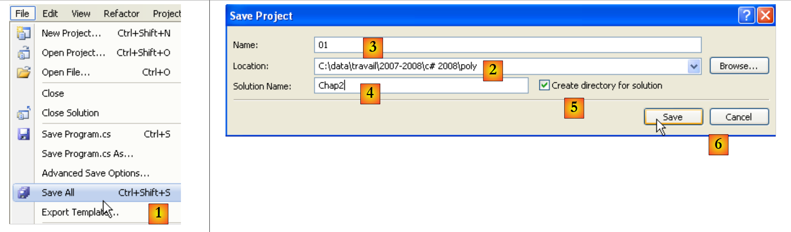

4. الفئات، الهياكل، الواجهات
4.1. الكائن من خلال المثال
4.1.1. مقدمة
نتناول الآن، من خلال المثال، البرمجة الكائنية. الكائن هو كيان يحتوي على بيانات تحدد حالته (تسمى الحقول، السمات، ...) ووظائف (تسمى الطرق). يتم إنشاء الكائن وفقًا لنموذج يسمى الفئة:
public class C1{
Type1 p1; // الحقل p1
Type2 p2; // الحقل p2
…
Type3 m3(…){ // طريقة m3
…
}
Type4 m4(…){ // طريقة m4
…
}
…
}
انطلاقًا من الفئة C1 السابقة، يمكن إنشاء العديد من الكائنات O1، O2،... وستحتوي جميعها على الحقول p1، p2،... والطرق m3، m4،... ولكنها ستحتوي على قيم مختلفة لحقولها pi، وبذلك يكون لكل منها حالة خاصة بها. إذا كان o1 كائنًا من النوع C1، فإن o1.p1 يشير إلى الخاصية p1 لـ o1، ويشير o1.m1 إلى الطريقة m1 لـ O1.
لنأخذ نموذجًا أوليًا للكائن: الفئة Personne.
4.1.2. إنشاء مشروع C#
في الأمثلة السابقة، لم يكن لدينا في المشروع سوى ملف مصدر واحد: Program.cs. من الآن فصاعدًا، يمكننا أن نضم عدة ملفات مصدر في مشروع واحد. سنوضح كيفية القيام بذلك.
 |
في [1]، قم بإنشاء مشروع جديد. في [2]، اختر "تطبيق وحدة التحكم". في [3]، اترك القيمة الافتراضية. في [4]، قم بالتأكيد. في [5]، المشروع الذي تم إنشاؤه. محتوى Program.cs هو كما يلي:
using System;
using System.Collections.Generic;
using System.Linq;
using System.Text;
namespace ConsoleApplication1 {
class Program {
static void Main(string[] args) {
}
}
}
لنحفظ المشروع الذي تم إنشاؤه:
 |
في [1]، خيار الحفظ. في [2]، حدد المجلد الذي تريد حفظ المشروع فيه. في [3]، قم بتسمية المشروع. في [5]، حدد أنك تريد إنشاء حل. الحل هو مجموعة من المشاريع. في [4]، قم بتسمية الحل. في [6]، قم بتأكيد الحفظ.
 |
في [1]، المشروع المحفوظ. في [2]، أضف عنصرًا جديدًا إلى المشروع.
 |
في [1]، حدد أنك تريد إضافة فئة. في [2]، اسم الفئة. في [3]، قم بتأكيد المعلومات. في [4]، يحتوي المشروع [01] على ملف مصدر جديد Personne.cs:
using System;
using System.Collections.Generic;
using System.Linq;
using System.Text;
namespace ConsoleApplication1 {
class Personne {
}
}
نقوم بتعديل مساحة اسم كل ملف من ملفات المصدر في Chap2 ونحذف استيراد مساحات الأسماء غير الضرورية:
using System;
namespace Chap2 {
class Personne {
}
}
using System;
namespace Chap2 {
class Program {
static void Main(string[] args) {
}
}
}
4.1.3. تعريف فئة Personne
سيكون تعريف الفئة Personne في ملف المصدر [Personne.cs] كما يلي:
using System;
namespace Chap2 {
public class Personne {
// السمات
private string prenom;
private string nom;
private int age;
// طريقة
public void Initialise(string P, string N, int age) {
this.prenom = P;
this.nom = N;
this.age = age;
}
// طريقة
public void Identifie() {
Console.WriteLine("[{0}, {1}, {2}]", prenom, nom, age);
}
}
}
لدينا هنا تعريف لفئة، أي لنوع من أنواع البيانات. عند إنشاء متغيرات من هذا النوع، سنسميها كائنات أو مثيلات للفئة. الفئة هي إذن قالب يتم بناء الكائنات بناءً عليه.
يمكن أن تكون عناصر أو حقول الفئة عبارة عن بيانات (سمات) أو طرق (وظائف) أو خصائص. الخصائص هي طرق خاصة تُستخدم لمعرفة أو تحديد قيمة سمات الكائن. يمكن أن تكون هذه الحقول مصحوبة بإحدى الكلمات الرئيسية الثلاث التالية:
لا يمكن الوصول إلى الحقل الخاص (private) إلا من خلال الطرق الداخلية للفئة | |
يمكن الوصول إلى الحقل العام (public) من خلال أي طريقة محددة أو غير محددة داخل الفئة | |
لا يمكن الوصول إلى الحقل المحمي (protected) إلا من خلال الطرق الداخلية للفئة أو كائن مشتق (انظر لاحقًا مفهوم التوريث). |
بشكل عام، يتم إعلان بيانات الفئة على أنها خاصة بينما يتم إعلان طرقها وخصائصها على أنها عامة. وهذا يعني أن مستخدم الكائن (المبرمج)
- لن يتمكن من الوصول مباشرة إلى البيانات الخاصة للكائن
- سيتمكن من استخدام الطرق العامة للكائن، ولا سيما تلك التي تتيح الوصول إلى بياناته الخاصة.
صيغة إعلان فئة C هي كما يلي:
public class C{
private donnée ou méthode ou propriété privée;
public donnée ou méthode ou propriété publique;
protected donnée ou méthode ou propriété protégée;
}
ترتيب إعلان السمات private و protected و public غير مهم.
4.1.4. طريقة Initialise
لنعد إلى فئة Personne المُعلنة على النحو التالي:
using System;
namespace Chap2 {
public class Personne {
// السمات
private string prenom;
private string nom;
private int age;
// طريقة
public void Initialise(string p, string n, int age) {
this.prenom = p;
this.nom = n;
this.age = age;
}
// طريقة
public void Identifie() {
Console.WriteLine("[{0}, {1}, {2}]", prenom, nom, age);
}
}
}
ما هو دور الأسلوب Initialise؟ نظرًا لأن nom و prenom و age هي بيانات خاصة بالفئة Personne، فإن التعليمات:
غير قانونية. يجب علينا تهيئة كائن من النوع Personne عبر طريقة عامة. وهذا هو دور الطريقة Initialise. سنكتب:
الكتابة p1.Initialise صحيحة لأن Initialise متاحة للجمهور.
4.1.5. المشغل new
تسلسل التعليمات
غير صحيحة. التعليمات
تعلن p1 كمرجع إلى كائن من النوع Personne. هذا الكائن غير موجود بعد، وبالتالي لم يتم تهيئة p1. وكأننا نكتب:
حيث نشير صراحةً باستخدام الكلمة الرئيسية null إلى أن المتغير p1 لا يشير بعد إلى أي كائن. وعندما نكتب بعد ذلك
فإننا نستدعي الطريقة Initialise للكائن المشار إليه بواسطة p1. لكن هذا الكائن لا يوجد بعد، وسيشير المُجمِّع إلى وجود خطأ. لكي يشير p1 إلى كائن، يجب كتابة:
يؤدي ذلك إلى إنشاء كائن من النوع Personne لم يتم تهيئته بعد: ستكون قيمة السمتين nom و prenom، اللتين هما إشارات إلى كائنات من النوع String، هي null، و age القيمة 0. لذلك هناك تهيئة افتراضية. الآن بما أن p1 يشير إلى كائن، فإن تعليمة تهيئة هذا الكائن
صحيحة.
4.1.6. الكلمة الرئيسية this
لنلقِ نظرة على كود الطريقة initialise:
public void Initialise(string p, string n, int age) {
this.prenom = p;
this.nom = n;
this.age = age;
}
تعني التعليمات this.prenom=p أن السمة prenom للكائن الحالي (this) تتلقى القيمة p. تشير الكلمة الرئيسية this إلى الكائن الحالي: الكائن الذي توجد فيه الطريقة المنفذة. كيف نعرف ذلك؟ لننظر إلى كيفية تهيئة الكائن المشار إليه بواسطة p1 في البرنامج المستدعي:
يتم استدعاء الطريقة Initialise للكائن p1. عندما نشير في هذه الطريقة إلى الكائن this، فإننا نشير في الواقع إلى الكائن p1. كان من الممكن أيضًا كتابة الطريقة Initialise على النحو التالي:
public void Initialise(string p, string n, int age) {
prenom = p;
nom = n;
this.age = age;
}
عندما تشير إحدى طرق كائن ما إلى سمة A لهذا الكائن، فإن الكتابة this.A تكون ضمنية. ويجب استخدامها صراحةً عند وجود تعارض في المعرفات. وهذا هو الحال في الأمر التالي:
this.age=age;
حيث يشير age إلى سمة للكائن الحالي وكذلك إلى المعلمة age التي تتلقاها الطريقة. يجب عندئذٍ إزالة الغموض عن طريق تسمية السمة age بـ this.age.
4.1.7. برنامج اختبار
فيما يلي برنامج اختبار قصير. تمت كتابة هذا البرنامج في ملف المصدر [Program.cs]:
using System;
namespace Chap2 {
class P01 {
static void Main() {
Personne p1 = new Personne();
p1.Initialise("Jean", "Dupont", 30);
p1.Identifie();
}
}
}
قبل تنفيذ المشروع [01]، قد يكون من الضروري تحديد ملف المصدر المراد تنفيذه:
 |
في خصائص المشروع [01]، يتم تحديد الفئة المطلوب تنفيذها في [1].
النتائج التي تم الحصول عليها عند التنفيذ هي كما يلي:
4.1.8. طريقة أخرى Initialise
لنأخذ الفئة Personne مرة أخرى ونضيف إليها الطريقة التالية:
public void Initialise(Personne p) {
prenom = p.prenom;
nom = p.nom;
age = p.age;
}
لدينا الآن طريقتان تحملان الاسم Initialise: وهذا أمر مقبول طالما أنهما تقبلان معلمات مختلفة. وهذا هو الحال هنا. أصبح المعامل الآن مرجعًا p إلى شخص. ثم تُعزى سمات الشخص p إلى الكائن الحالي (this). يُلاحظ أن الطريقة Initialise لها وصول مباشر إلى سمات الكائن p على الرغم من أن هذه السمات من النوع private. هذا صحيح دائمًا: الكائن o1 من فئة C لديه دائمًا وصول إلى سمات الكائنات من نفس الفئة C.
فيما يلي اختبار للفئة الجديدة Personne:
using System;
namespace Chap2 {
class Program {
static void Main() {
Personne p1 = new Personne();
p1.Initialise("Jean", "Dupont", 30);
p1.Identifie();
Personne p2 = new Personne();
p2.Initialise(p1);
p2.Identifie();
}
}
}
وإليكم نتائجها:
4.1.9. منشئات الفئة Personne
المنشئ هو طريقة تحمل اسم الفئة ويتم استدعاؤها عند إنشاء الكائن. وعادة ما يتم استخدامها لتهيئته. وهي طريقة يمكن أن تقبل معلمات ولكنها لا تعطي أي نتيجة. ولا يسبق نموذجها الأولي أو تعريفها أي نوع (ولا حتى void).
إذا كانت الفئة C تحتوي على منشئ يقبل n معلمات argi، فيمكن إعلان وتهيئة كائن من هذه الفئة بالشكل التالي:
أو
عندما تحتوي فئة C على منشئ واحد أو أكثر، يجب استخدام أحد هذه المنشئات لإنشاء كائن من هذه الفئة. إذا لم يكن للفئة C أي منشئ، فإنها تمتلك منشئًا افتراضيًا وهو المنشئ بدون معلمات: public C(). يتم عندئذ تهيئة سمات الكائن بقيم افتراضية. وهذا ما حدث في البرامج السابقة، حيث كتبنا:
لنقم بإنشاء منشئين لفصلنا Personne:
using System;
namespace Chap2 {
public class Personne {
// السمات
private string prenom;
private string nom;
private int age;
// المنشئون
public Personne(String p, String n, int age) {
Initialise(p, n, age);
}
public Personne(Personne P) {
Initialise(P);
}
// طريقة
public void Initialise(string p, string n, int age) {
...
}
public void Initialise(Personne p) {
...
}
// طريقة
public void Identifie() {
Console.WriteLine("[{0}, {1}, {2}]", prenom, nom, age);
}
}
}
يكتفي منشئانا باستدعاء الطرق Initialise التي درسناها سابقًا. نذكر أنه عندما نجد في منشئ، على سبيل المثال، الترميز Initialise(p)، فإن المُجمِّع يُترجمها إلى this.Initialise(p). في المنشئ، يتم استدعاء الطريقة Initialise للعمل على الكائن المشار إليه بواسطة this، أي الكائن الحالي، الذي يجري إنشاؤه.
فيما يلي برنامج اختبار قصير:
using System;
namespace Chap2 {
class Program {
static void Main() {
Personne p1 = new Personne("Jean", "Dupont", 30);
p1.Identifie();
Personne p2 = new Personne(p1);
p2.Identifie();
}
}
}
والنتائج التي تم الحصول عليها:
4.1.10. مراجع الكائنات
ما زلنا نستخدم نفس الفئة Personne. يصبح برنامج الاختبار كما يلي:
using System;
namespace Chap2 {
class Program2 {
static void Main() {
// p1
Personne p1 = new Personne("Jean", "Dupont", 30);
Console.Write("p1="); p1.Identifie();
// p2 تشير إلى نفس الكائن الذي تشير إليه p1
Personne p2 = p1;
Console.Write("p2="); p2.Identifie();
// p3 يشير إلى كائن سيكون نسخة من الكائن الذي يشير إليه p1
Personne p3 = new Personne(p1);
Console.Write("p3="); p3.Identifie();
// يتم تغيير حالة الكائن المشار إليه بواسطة p1
p1.Initialise("Micheline", "Benoît", 67);
Console.Write("p1="); p1.Identifie();
// نظرًا لأن p2=p1، فإن الكائن المشار إليه بواسطة p2 لا بد أن يكون قد تغيرت حالته
Console.Write("p2="); p2.Identifie();
// نظرًا لأن p3 لا يشير إلى نفس الكائن الذي يشير إليه p1، فلا بد أن الكائن المشار إليه بواسطة p3 لم يتغير
Console.Write("p3="); p3.Identifie();
}
}
}
النتائج التي تم الحصول عليها هي كما يلي:
عند تعريف المتغير p1 بواسطة
تشير p1 إلى الكائن Personne("Jean","Dupont",30) ولكنها ليست الكائن نفسه. في لغة C، يمكن القول إنها مؤشر، c.a.d. عنوان الكائن الذي تم إنشاؤه. إذا كتبنا بعد ذلك:
فليس الكائن Personne("Jean","Dupont",30) هو الذي يتم تعديله، بل المرجع p1 هو الذي يتغير قيمته. وسيتم "فقدان" الكائن Personne("Jean","Dupont",30) إذا لم يتم الإشارة إليه بواسطة أي متغير آخر.
عند كتابة:
نقوم بتهيئة المؤشر p2: فهو "يشير" إلى نفس الكائن (يحدد نفس الكائن) الذي يشير إليه المؤشر p1. وبالتالي، إذا قمنا بتعديل الكائن "المشار إليه" (أو المشار إليه) بواسطة p1، فإننا نقوم أيضًا بتعديل الكائن المشار إليه بواسطة p2.
عندما نكتب:
يتم إنشاء كائن جديد Personne. سيتم الإشارة إلى هذا الكائن الجديد بواسطة p3. إذا قمنا بتعديل الكائن "المشار إليه" (أو المشار إليه) بواسطة p1، فلن نعدل بأي شكل من الأشكال الكائن المشار إليه بواسطة p3. وهذا ما تظهره النتائج التي تم الحصول عليها.
4.1.11. تمرير المعلمات من نوع مرجع الكائن
في الفصل السابق، درسنا طرق تمرير معلمات الدالة عندما تمثل هذه المعلمات نوعًا بسيطًا في C# ممثلاً بهيكل .NET. لنرى ما يحدث عندما تكون المعلمة مرجعًا للكائن:
using System;
using System.Text;
namespace Chap1 {
class P12 {
public static void Main() {
// المثال 4
StringBuilder sb0 = new StringBuilder("essai0"), sb1 = new StringBuilder("essai1"), sb2 = new StringBuilder("essai2"), sb3;
Console.WriteLine("Dans fonction appelante avant appel : sb0={0}, sb1={1}, sb2={2}", sb0,sb1, sb2);
ChangeStringBuilder(sb0, sb1, ref sb2, out sb3);
Console.WriteLine("Dans fonction appelante après appel : sb0={0}, sb1={1}, sb2={2}, sb3={3}", sb0, sb1, sb2, sb3);
}
private static void ChangeStringBuilder(StringBuilder sbf0, StringBuilder sbf1, ref StringBuilder sbf2, out StringBuilder sbf3) {
Console.WriteLine("Début fonction appelée : sbf0={0}, sbf1={1}, sbf2={2}", sbf0,sbf1, sbf2);
sbf0.Append("*****");
sbf1 = new StringBuilder("essai1*****");
sbf2 = new StringBuilder("essai2*****");
sbf3 = new StringBuilder("essai3*****");
Console.WriteLine("Fin fonction appelée : sbf0={0}, sbf1={1}, sbf2={2}, sbf3={3}", sbf0, sbf1, sbf2, sbf3);
}
}
}
- السطر 8: يحدد 3 كائنات من النوع StringBuilder. كائن StringBuilder قريب من كائن string. عند معالجة كائن string، نحصل في المقابل على كائن جديد string. وهكذا في تسلسل الكود:
السطر 1 ينشئ كائن string في الذاكرة و s هو عنوانه. في السطر 2، s.ToUpperCase() ينشئ كائنًا آخر string في الذاكرة. وبالتالي، بين السطرين 1 و2، تغيرت قيمة s (فهي تشير إلى الكائن الجديد). أما الفئة StringBuilder، فهي تسمح بتحويل سلسلة دون إنشاء كائن ثانٍ. وهذا هو المثال المذكور أعلاه:
- السطر 8: 4 مراجع [sb0, sb1, sb2, sb3] إلى كائنات من النوع StringBuilder
- السطر 10: تم تمريرها إلى الطريقة ChangeStringBuilder بأوضاع مختلفة: sb0، sb1 مع الوضع الافتراضي، sb2 مع الكلمة الرئيسية ref، sb3 مع الكلمة الرئيسية out.
- الأسطر 15-22: طريقة لها المعلمات الشكلية [sbf0, sbf1, sbf2, sbf3]. العلاقات بين المعلمات الشكلية sbfi والفعليّة sbi هي كما يلي:
- sbf0 و sb0 هما، عند بدء تشغيل الطريقة، مرجعان منفصلان يشيران إلى نفس الكائن (تمرير العناوين بالقيمة)
- وينطبق الأمر نفسه على sbf1 و sb1
- يُشير كل من sbf2 و sb2، عند بدء تنفيذ الأسلوب، إلى نفس المرجع على نفس الكائن (الكلمة الرئيسية ref)
- sbf3 و sb3 هما، بعد تنفيذ الأسلوب، مرجع واحد لنفس الكائن (الكلمة الرئيسية out)
النتائج التي تم الحصول عليها هي التالية:
التفسيرات:
- sb0 و sbf0 هما مرجعان منفصلان لنفس الكائن. وقد تم تعديل هذا الكائن عبر sbf0 - السطر 3. ويمكن رؤية هذا التعديل عبر sb0 - السطر 4.
- sb1 و sbf1 هما مرجعان منفصلان لنفس الكائن. تم تعديل قيمة sbf1 في الطريقة وهي تشير الآن إلى كائن جديد - السطر 3. لا يغير هذا شيئًا من قيمة sb1 التي تستمر في الإشارة إلى نفس الكائن - السطر 4.
- sb2 و sbf2 هما نفس المرجع لنفس الكائن. يتم تعديل قيمة sbf2 في الأسلوب وتشير الآن إلى كائن جديد - السطر 3. وبما أن sbf2 و sb2 هما كيان واحد، تم تغيير قيمة sb2 أيضًا، ويشير sb2 إلى نفس الكائن الذي يشير إليه sbf2 - السطران 3 و 4.
- قبل استدعاء الأسلوب، لم يكن لـ sb3 أي قيمة. بعد الأسلوب، يتلقى sb3 قيمة sbf3. لذلك لدينا مرجعان لنفس الكائن - السطران 3 و 4
4.1.12. الكائنات المؤقتة
في تعبير ما، يمكننا استدعاء منشئ كائن بشكل صريح: يتم إنشاء هذا الكائن، لكن لا يمكننا الوصول إليه (لتعديله على سبيل المثال). يتم إنشاء هذا الكائن المؤقت لتلبية احتياجات تقييم التعبير ثم يتم التخلي عنه. سيتم استرداد مساحة الذاكرة التي كان يشغلها تلقائيًا لاحقًا بواسطة برنامج يسمى "ramasse-miettes" (مجمع القمامة) وتتمثل مهمته في استرداد مساحة الذاكرة التي تشغلها الكائنات التي لم تعد مرجعية لها بيانات البرنامج.
لننظر إلى برنامج الاختبار الجديد التالي:
using System;
namespace Chap2 {
class Program {
static void Main() {
new Personne(new Personne("Jean", "Dupont", 30)).Identifie();
}
}
}
ولنعدل منشئات الفئة Personne بحيث تعرض رسالة:
// المنشئون
public Personne(String p, String n, int age) {
Console.WriteLine("Constructeur Personne(string, string, int)");
Initialise(p, n, age);
}
public Personne(Personne P) {
Console.Out.WriteLine("Constructeur Personne(Personne)");
Initialise(P);
}
ونحصل على النتائج التالية:
تُظهر البناء المتتالي للكائنين المؤقتين.
4.1.13. طرق قراءة وكتابة السمات الخاصة
نضيف إلى الفئة Personne الطرق اللازمة لقراءة أو تعديل حالة سمات الكائنات:
using System;
namespace Chap2 {
public class Personne {
// السمات
private string prenom;
private string nom;
private int age;
// المنشئات
public Personne(String p, String n, int age) {
Console.WriteLine("Constructeur Personne(string, string, int)");
Initialise(p, n, age);
}
public Personne(Personne p) {
Console.Out.WriteLine("Constructeur Personne(Personne)");
Initialise(p);
}
// طريقة
public void Initialise(string p, string n, int age) {
this.prenom = p;
this.nom = n;
this.age = age;
}
public void Initialise(Personne p) {
prenom = p.prenom;
nom = p.nom;
age = p.age;
}
// وحدات الوصول
public String GetPrenom() {
return prenom;
}
public String GetNom() {
return nom;
}
public int GetAge() {
return age;
}
//المعدلات
public void SetPrenom(String P) {
this.prenom = P;
}
public void SetNom(String N) {
this.nom = N;
}
public void SetAge(int age) {
this.age = age;
}
// طريقة
public void Identifie() {
Console.WriteLine("[{0}, {1}, {2}]", prenom, nom, age);
}
}
}
نختبر الفئة الجديدة باستخدام البرنامج التالي:
using System;
namespace Chap2 {
class Program {
static void Main(string[] args) {
Personne p = new Personne("Jean", "Michelin", 34);
Console.Out.WriteLine("p=(" + p.GetPrenom() + "," + p.GetNom() + "," + p.GetAge() + ")");
p.SetAge(56);
Console.Out.WriteLine("p=(" + p.GetPrenom() + "," + p.GetNom() + "," + p.GetAge() + ")");
}
}
}
ونحصل على النتائج:
4.1.14. الخصائص
هناك طريقة أخرى للوصول إلى سمات الفئة، وهي إنشاء خصائص. تسمح لنا هذه الخصائص بمعالجة السمات الخاصة كما لو كانت عامة.
لنأخذ الفئة Personne التالية حيث تم استبدال أدوات الوصول والتعديل السابقة بخصائص للقراءة والكتابة:
using System;
namespace Chap2 {
public class Personne {
// السمات
private string prenom;
private string nom;
private int age;
// منشئات
public Personne(String p, String n, int age) {
Initialise(p, n, age);
}
public Personne(Personne p) {
Initialise(p);
}
// طريقة
public void Initialise(string p, string n, int age) {
this.prenom = p;
this.nom = n;
this.age = age;
}
public void Initialise(Personne p) {
prenom = p.prenom;
nom = p.nom;
age = p.age;
}
// الخصائص
public string Prenom {
get { return prenom; }
set {
// هل الاسم الأول صالح؟
if (value == null || value.Trim().Length == 0) {
throw new Exception("prénom (" + value + ") invalide");
} else {
prenom = value;
}
}//if
}//الاسم الأول
public string Nom {
get { return nom; }
set {
// اللقب صالح؟
if (value == null || value.Trim().Length == 0) {
throw new Exception("nom (" + value + ") invalide");
} else { nom = value; }
}//if
}//الاسم
public int Age {
get { return age; }
set {
// العمر صالح؟
if (value >= 0) {
age = value;
} else
throw new Exception("âge (" + value + ") invalide");
}//إذا
}//العمر
// طريقة
public void Identifie() {
Console.WriteLine("[{0}, {1}, {2}]", prenom, nom, age);
}
}
}
تسمح الخاصية بقراءة (get) أو تعيين (set) قيمة سمة ما. يتم إعلان الخاصية على النحو التالي:
حيث يجب أن يكون Type هو نوع السمة التي تديرها الخاصية. ويمكن أن تحتوي على طريقتين تسميان get و set. عادةً ما تكون طريقة get مسؤولة عن إرجاع قيمة السمة التي تديرها (ويمكنها إرجاع شيء آخر، فلا شيء يمنعها من ذلك). تستقبل الطريقة set معلمة تسمى value وتقوم عادةً بتعيينها للسمة التي تديرها. ويمكنها الاستفادة من ذلك لإجراء تحقق من صحة القيمة المستلمة وربما إثارة استثناء إذا تبين أن القيمة غير صالحة. وهذا ما يتم هنا.
كيف يتم استدعاء هاتين الطريقتين get و set؟ لننظر إلى برنامج الاختبار التالي:
using System;
namespace Chap2 {
class Program {
static void Main(string[] args) {
Personne p = new Personne("Jean", "Michelin", 34);
Console.Out.WriteLine("p=(" + p.Prenom + "," + p.Nom + "," + p.Age + ")");
p.Age = 56;
Console.Out.WriteLine("p=(" + p.Prenom + "," + p.Nom + "," + p.Age + ")");
try {
p.Age = -4;
} catch (Exception ex) {
Console.Error.WriteLine(ex.Message);
}//محاولة-التقاط
}
}
}
في التعليمات
Console.Out.WriteLine("p=(" + p.Prenom + "," + p.Nom + "," + p.Age + ")");
نحاول الحصول على قيم الخصائص Prenom و Nom و Age للشخص p. يتم عندئذٍ استدعاء طريقة get لهذه الخصائص والتي تعرض قيمة السمة التي تديرها.
في التعليمات
نريد تعيين قيمة الخاصية Age. عندئذ يتم استدعاء طريقة set لهذه الخاصية. وستتلقى 56 في معلمتها value.
تُسمى الخاصية P لفئة C التي لا تحدد سوى طريقة get بأنها للقراءة فقط. إذا كان c كائنًا من فئة C، فسيتم رفض العملية c.P=value من قبل المُجمع.
يؤدي تنفيذ برنامج الاختبار السابق إلى النتائج التالية:
تسمح لنا الخصائص بالتالي بمعالجة السمات الخاصة كما لو كانت عامة. ومن الخصائص الأخرى للخصائص أنها يمكن استخدامها مع منشئ وفقًا للبناء التالي:
هذه الصيغة تعادل الكود التالي:
لا يهم ترتيب الخصائص. إليك مثال على ذلك.
يتم إضافة منشئ جديد بدون معلمات إلى الفئة Personne:
public Personne() {
}
لا يقوم المنشئ بتهيئة أعضاء الكائن. وهذا ما يُسمى بالمنشئ الافتراضي. وهو الذي يُستخدم عندما لا تحدد الفئة أي منشئ.
يقوم الكود التالي بإنشاء وتهيئة (السطر 6) Personne جديدة باستخدام الصيغة الموضحة سابقًا:
using System;
namespace Chap2 {
class Program {
static void Main(string[] args) {
Personne p2 = new Personne { Age = 7, Prenom = "Arthur", Nom = "Martin" };
Console.WriteLine("p2=({0},{1},{2})", p2.Prenom, p2.Nom, p2.Age);
}
}
}
في السطر 6 أعلاه، يتم استخدام المنشئ بدون معلمات Personne(). في هذه الحالة بالذات، كان من الممكن أيضًا كتابة
Personne p2 = new Personne() { Age = 7, Prenom = "Arthur", Nom = "Martin" };
ولكن الأقواس في المنشئ Personne() بدون معلمات ليست إلزامية في هذه الصيغة.
نتائج التنفيذ هي كما يلي:
في كثير من الحالات، تقتصر طريقتا get و set الخاصة بخاصية ما على قراءة وكتابة حقل خاص دون أي معالجة أخرى. يمكننا إذن، في هذا السيناريو، استخدام خاصية تلقائية مُعلنة على النحو التالي:
لا يتم إعلان الحقل الخاص المرتبط بالخاصية. يتم إنشاؤه تلقائيًا بواسطة المُجمع. ولا يمكن الوصول إليه إلا من خلال خاصيته. وبالتالي، بدلاً من كتابة:
private string prenom;
...
// الخاصية المرتبطة
public string Prenom {
get { return prenom; }
set {
// الاسم الأول صالح؟
if (value == null || value.Trim().Length == 0) {
throw new Exception("prénom (" + value + ") invalide");
} else {
prenom = value;
}
}//if
}//الاسم الأول
يمكننا كتابة:
دون الإعلان عن الحقل الخاص prenom. الفرق بين الخاصيتين السابقتين هو أن الأولى تتحقق من صحة الاسم الأول في set، بينما الثانية لا تقوم بأي تحقق.
استخدام الخاصية التلقائية Prenom يعادل إعلان حقل Prenom عامًا:
قد يتساءل المرء عما إذا كان هناك فرق بين الإعلانين. لا يُنصح بإعلان public كحقل لفئة. فهذا يتعارض مع مفهوم تغليف حالة الكائن، وهي حالة يجب أن تكون خاصة ويتم عرضها عبر طرق عامة.
إذا تم إعلان الخاصية التلقائية virtuelle,، فيمكن إعادة تعريفها في فئة فرعية:
class Class1 {
public virtual string Prop { get; set; }
}
class Class2 : Class1 {
public override string Prop { get { return base.Prop; } set {... } }
}
السطر 2 أعلاه، يمكن للفئة الفرعية Class2 أن تضع في set, كودًا يتحقق من صحة القيمة المعينة للخاصية التلقائية base.Prop للفئة الأم Class1.
4.1.15. طرق وسمات الفئة
لنفترض أننا نريد حساب عدد الكائنات Personne التي تم إنشاؤها في أحد التطبيقات. يمكننا إدارة عداد بأنفسنا، لكننا قد ننسى الكائنات المؤقتة التي يتم إنشاؤها هنا أو هناك. يبدو أنه من الأكثر أمانًا تضمين تعليمة تزيد العداد في منشئات الفئة Personne. تكمن المشكلة في تمرير مرجع لهذا العداد حتى يتمكن المنشئ من زيادته: يجب تمرير معلمة جديدة إليهم. يمكن أيضًا تضمين العداد في تعريف الفئة. نظرًا لأنه سمة للفئة نفسها وليس لمثيل معين من هذه الفئة، يتم إعلانه بشكل مختلف باستخدام الكلمة الرئيسية static:
private static long nbPersonnes;
للإشارة إليه، نكتب Personne.nbPersonnes لإظهار أنه سمة للفئة Personne نفسها. هنا، أنشأنا سمة خاصة لن نتمكن من الوصول إليها مباشرة خارج الفئة. لذلك، نقوم بإنشاء خاصية عامة لإتاحة الوصول إلى سمة الفئة nbPersonnes. لجعل قيمة nbPersonnes، لا تحتاج الطريقة get لهذه الخاصية إلى كائن Personne معين: في الواقع، nbPersonnes هو سمة لفئة بأكملها. لذلك نحتاج إلى خاصية مُعلنة أيضًا باسم static:
public static long NbPersonnes {
get { return nbPersonnes; }
}
والتي سيتم استدعاؤها من الخارج باستخدام صيغة Personne.NbPersonnes. فيما يلي مثال على ذلك.
تصبح الفئة Personne كما يلي:
using System;
namespace Chap2 {
public class Personne {
// سمات الفئة
private static long nbPersonnes;
public static long NbPersonnes {
get { return nbPersonnes; }
}
// سمات المثيل
private string prenom;
private string nom;
private int age;
// المنشئات
public Personne(String p, String n, int age) {
Initialise(p, n, age);
nbPersonnes++;
}
public Personne(Personne p) {
Initialise(p);
nbPersonnes++;
}
...
}
في السطرين 20 و 24، يقوم المنشئون بزيادة الحقل الثابت في السطر 7.
مع البرنامج التالي:
using System;
namespace Chap2 {
class Program {
static void Main(string[] args) {
Personne p1 = new Personne("Jean", "Dupont", 30);
Personne p2 = new Personne(p1);
new Personne(p1);
Console.WriteLine("Nombre de personnes créées : " + Personne.NbPersonnes);
}
}
}
نحصل على النتائج التالية:
4.1.16. جدول بالأشخاص
الكائن هو بيانات مثل أي بيانات أخرى، وبهذا الصفة يمكن تجميع عدة كائنات في جدول:
using System;
namespace Chap2 {
class Program {
static void Main(string[] args) {
// جدول الأشخاص
Personne[] amis = new Personne[3];
amis[0] = new Personne("Jean", "Dupont", 30);
amis[1] = new Personne("Sylvie", "Vartan", 52);
amis[2] = new Personne("Neil", "Armstrong", 66);
// العرض
foreach (Personne ami in amis) {
ami.Identifie();
}
}
}
}
- السطر 7: ينشئ مصفوفة من 3 عناصر من النوع Personne. يتم تهيئة هذه العناصر الثلاثة هنا بالقيم null و c.a.d. وهي لا تشير إلى أي كائن. مرة أخرى، وبسبب سوء استخدام المصطلحات، نتحدث عن مصفوفة كائنات في حين أنها مجرد مصفوفة مراجع كائنات. إن إنشاء مصفوفة الكائنات، التي هي كائن بحد ذاتها (وجود new)، لا ينشئ أي كائن من نوع عناصرها: يجب القيام بذلك لاحقًا.
- الأسطر 8-10: إنشاء 3 كائنات من النوع Personne
- الأسطر 12-14: عرض محتوى المصفوفة amis
نحصل على النتائج التالية:
4.2. الوراثة من خلال المثال
4.2.1. معلومات عامة
نتناول هنا مفهوم التوريث. الهدف من التوريث هو «تخصيص» فئة موجودة لتلبي احتياجاتنا. لنفترض أننا نريد إنشاء فئة Enseignant: فالمعلم هو شخص معين. لديه سمات لا يمتلكها أي شخص آخر: المادة التي يدرسها على سبيل المثال. لكنه يمتلك أيضًا سمات أي شخص: الاسم الأول واسم العائلة والعمر. لذا فإن المعلم ينتمي بالكامل إلى الفئة Personne لكنه يمتلك سمات إضافية. بدلاً من كتابة فئة Enseignant من الصفر، نفضل الاستفادة من مكونات فئة Personne التي سنقوم بتكييفها مع السمات الخاصة بالمعلمين. وهذا ما يتيحه لنا مفهوم التوريث.
للتعبير عن أن الفئة Enseignant ترث خصائص الفئة Personne، سنكتب:
تسمى Personne بالفئة الأصلية (أو الأم) وتسمى Enseignant بالفئة المشتقة (أو الابنة). يتمتع الكائن Enseignant بجميع خصائص الكائن Personne: فهو يمتلك نفس السمات ونفس الأساليب. لا تتكرر هذه السمات والأساليب الخاصة بالفئة الأم في تعريف الفئة الفرعية: نكتفي بالإشارة إلى السمات والأساليب التي أضافتها الفئة الفرعية:
نفترض أن الفئة Personne محددة على النحو التالي:
using System;
namespace Chap2 {
public class Personne {
// سمات الفئة
private static long nbPersonnes;
public static long NbPersonnes {
get { return nbPersonnes; }
}
// سمات المثيل
private string prenom;
private string nom;
private int age;
// المنشئات
public Personne(String prenom, String nom, int age) {
Nom = nom;
Prenom = prenom;
Age = age;
nbPersonnes++;
Console.WriteLine("Constructeur Personne(string, string, int)");
}
public Personne(Personne p) {
Nom = p.Nom;
Prenom = p.Prenom;
Age = p.Age;
nbPersonnes++;
Console.WriteLine("Constructeur Personne(Personne)");
}
// الخصائص
public string Prenom {
get { return prenom; }
set {
// الاسم الأول صالح؟
if (value == null || value.Trim().Length == 0) {
throw new Exception("prénom (" + value + ") invalide");
} else {
prenom = value;
}
}//if
}//الاسم الأول
public string Nom {
get { return nom; }
set {
// اللقب صالح؟
if (value == null || value.Trim().Length == 0) {
throw new Exception("nom (" + value + ") invalide");
} else { nom = value; }
}//إذا
}//الاسم
public int Age {
get { return age; }
set {
// العمر صالح؟
if (value >= 0) {
age = value;
} else
throw new Exception("âge (" + value + ") invalide");
}//إذا
}//العمر
// الملكية
public string Identite {
get { return String.Format("[{0}, {1}, {2}]", prenom, nom, age);}
}
}
}
تم استبدال الطريقة Identifie بالخاصية Identite للقراءة فقط والتي تحدد هوية الشخص. نقوم بإنشاء فئة Enseignant موروثة من الفئة Personne:
using System;
namespace Chap2 {
class Enseignant : Personne {
// السمات
private int section;
// المنشئ
public Enseignant(string prenom, string nom, int age, int section)
: base(prenom, nom, age) {
// يتم حفظ القسم عبر الخاصية Section
Section = section;
// المتابعة
Console.WriteLine("Construction Enseignant(string, string, int, int)");
}//المنشئ
// خاصية Section
public int Section {
get { return section; }
set { section = value; }
}// Section
}
}
تضيف الفئة Enseignant إلى أساليب وسمات الفئة Personne:
- السطر 4: الفئة Enseignant مشتقة من الفئة Personne
- السطر 6: سمة section وهي رقم القسم الذي ينتمي إليه المعلم ضمن هيئة التدريس (قسم واحد لكل تخصص بشكل عام). يمكن الوصول إلى هذه السمة الخاصة عبر الخاصية العامة Section في الأسطر 18-21
- السطر 9: منشئ جديد يسمح بتهيئة جميع سمات المعلم
4.2.2. إنشاء كائن "مدرس"
لا ترث الفئة الفرعية منشئات فئتها الأم. لذا يجب عليها تعريف منشئاتها الخاصة. منشئ الفئة Enseignant هو التالي:
// المنشئ
public Enseignant(string prenom, string nom, int age, int section)
: base(prenom, nom, age) {
// يتم حفظ القسم
Section = section;
// المتابعة
Console.WriteLine("Construction enseignant(string, string, int, int)");
}//المصنع
الإعلان
public Enseignant(string prenom, string nom, int age, int section)
: base(prenom, nom, age) {
أن المنشئ يتلقى أربعة معلمات prenom، nom، age، section ويمرر ثلاثة معلمات (prenom,nom,age) إلى فئته الأساسية، وهي هنا الفئة Personne. من المعروف أن هذه الفئة تحتوي على منشئ Personne(string, string, int) الذي سيسمح بإنشاء شخص باستخدام المعلمات التي تم تمريرها (prenom,nom,age). بمجرد الانتهاء من إنشاء الفئة الأساسية، يستمر إنشاء الكائن Enseignant بتنفيذ نص المنشئ:
تجدر الإشارة إلى أنه على يسار علامة =، لم يتم استخدام السمة section للكائن، بل الخاصية Section المرتبطة بها. وهذا يسمح للمنشئ بالاستفادة من أي عمليات التحقق من الصحة التي قد تقوم بها هذه الطريقة. وهذا يتجنب وضعها في مكانين مختلفين: المنشئ والخاصية.
باختصار، يقوم منشئ الفئة المشتقة بما يلي:
- يمرر إلى فئته الأساسية المعلمات التي تحتاجها هذه الأخيرة لبناء نفسها
- يستخدم المعلمات الأخرى لتهيئة السمات الخاصة به
كان من الممكن تفضيل كتابة:
// المنشئ
public Enseignant(string prenom, string nom, int age, int section){
this.prenom=prenom;
this.nom=nom;
this.age=age;
this.section=section;
}
هذا مستحيل. فقد أعلنت الفئة Personne أن حقولها الثلاثة prenom و nom و age هي حقول خاصة (private). فقط الكائنات من نفس الفئة لها وصول مباشر إلى هذه الحقول. يجب على جميع الكائنات الأخرى، بما في ذلك الكائنات الفرعية كما في هذه الحالة، المرور عبر طرق عامة للوصول إليها. كان الأمر سيختلف لو أن الفئة Personne أعلنت الحقول الثلاثة محمية (protected): كانت ستسمح عندئذٍ للفئات المشتقة بالوصول المباشر إلى الحقول الثلاثة. في مثالنا، كان استخدام منشئ الفئة الأم هو الحل الصحيح، وهذه هي الطريقة المعتادة: عند إنشاء كائن فرعي، نستدعي أولاً منشئ الكائن الأم ثم نكمل عمليات التهيئة الخاصة بالكائن الفرعي هذه المرة (section في مثالنا).
دعونا نجرب برنامج اختبار أولي [Program.cs]:
using System;
namespace Chap2 {
class Program {
static void Main(string[] args) {
Console.WriteLine(new Enseignant("Jean", "Dupont", 30, 27).Identite);
}
}
}
يكتفي هذا البرنامج بإنشاء كائن Enseignant (new) وتحديده. لا تحتوي الفئة Enseignant على طريقة Identite، لكن فئتها الأم تحتوي على طريقة، وهي طريقة عامة: تصبح هذه الطريقة، عن طريق التوريث، طريقة عامة للفئة Enseignant.
المشروع بأكمله هو كما يلي:
 |
النتائج التي تم الحصول عليها هي كما يلي:
نلاحظ أن:
- تم إنشاء كائن Personne (السطر 1) قبل كائن Enseignant (السطر 2)
- الهوية التي تم الحصول عليها هي هوية الكائن Personne
4.2.3. إعادة تعريف طريقة أو خاصية
في المثال السابق، حصلنا على هوية الجزء Personne الخاص بالمدرس، ولكن هناك بعض المعلومات الخاصة بالفئة Enseignant (القسم) مفقودة. لذلك، يتعين علينا كتابة خاصية تسمح بتحديد هوية المدرس:
using System;
namespace Chap2 {
class Enseignant : Personne {
// السمات
private int section;
// المنشئ
public Enseignant(string prenom, string nom, int age, int section)
: base(prenom, nom, age) {
// يتم حفظ القسم عبر الخاصية Section
Section = section;
// المتابعة
Console.WriteLine("Construction Enseignant(string, string, int, int)");
}//منشئ
// خاصية Section
public int Section {
get { return section; }
set { section = value; }
}// القسم
// خاصية Identite
public new string Identite {
get { return String.Format("Enseignant[{0},{1}]", base.Identite, Section); }
}
}
}
السطور 24-26، تعتمد الخاصية Identite للفصل Enseignant على الخاصية Identite لفصلها الأم (base.Identite) (السطر 25) لعرض جزءها "Personne" ثم تكملها بالحقل section الخاص بالفئة Enseignant. لاحظ إعلان الخاصية Identite:
public new string Identite{
لنفترض أن هناك كائنًا enseignant E. يحتوي هذا الكائن في داخله على كائن Personne:
 |
يتم تعريف الخاصية Identite في كل من الفئة Enseignant وفئتها الأم Personne. في الفئة الفرعية Enseignant، يجب أن تسبق الخاصية Identite الكلمة الرئيسية new للإشارة إلى إعادة تعريف خاصية جديدة Identite للفئة Enseignant.
public new string Identite{
تحتوي الفئة Enseignant الآن على خاصيتين Identite:
- الخاصية الموروثة من الفئة الأم Personne
- والأخرى الخاصة بها
إذا كان E كائنًا من نوع Enseignant، فإن E.Identite تشير إلى الخاصية Identite للفئة Enseignant. يُقال إن الخاصية Identite للفئة الفرعية تعيد تعريف أو تخفي الخاصية Identite للفئة الأم. بشكل عام، إذا كانت O كائنًا وM طريقة، لتنفيذ الطريقة O.M، يبحث النظام عن طريقة M بالترتيب التالي:
- في فئة الكائن O
- في فئته الأم إذا كان له فئة أم
- في الفئة الأم لفئته الأم إن وجدت
- إلخ...
وبالتالي، يتيح التوريث إعادة تعريف الطرق/الخصائص التي تحمل نفس الاسم في الفئة الأم داخل الفئة الفرعية. وهذا ما يسمح بتكييف الفئة الفرعية مع احتياجاتها الخاصة. وبالاقتران مع تعدد الأشكال الذي سنراه لاحقًا، فإن إعادة تعريف الطرق/الخصائص هي الميزة الرئيسية للتوريث.
لنأخذ نفس برنامج الاختبار السابق:
using System;
namespace Chap2 {
class Program {
static void Main(string[] args) {
Console.WriteLine(new Enseignant("Jean", "Dupont", 30, 27).Identite);
}
}
}
النتائج التي تم الحصول عليها هذه المرة هي التالية:
4.2.4. التعدد
لنأخذ سلسلة من الفئات: C0 ← C1 ← C2 ← … ←Cn
حيث تشير Ci ← Cj إلى أن الفئة Cj مشتقة من الفئة Ci. وهذا يعني أن الفئة Cj تمتلك جميع خصائص الفئة Ci بالإضافة إلى خصائص أخرى. لنفترض أن هناك كائنات Oi من النوع Ci. من المسموح كتابة:
في الواقع، من خلال التوريث، تمتلك الفئة Cj جميع خصائص الفئة Ci بالإضافة إلى خصائص أخرى. وبالتالي، فإن الكائن Oj من النوع Cj يحتوي في داخله على كائن من النوع Ci. العملية
تجعل Oi مرجعًا للكائن من النوع Ci الموجود داخل الكائن Oj.
إن قدرة متغير Oi من الفئة Ci على الإشارة ليس فقط إلى كائن من الفئة Ci بل إلى أي كائن مشتق من الفئة Ci, يُسمى تعدد الأشكال: القدرة التي تتمتع بها المتغيرات على الإشارة إلى أنواع مختلفة من الكائنات.
لنأخذ مثالاً وننظر إلى الدالة التالية المستقلة عن أي فئة (static):
يمكننا أيضًا كتابة
أو
في هذه الحالة الأخيرة، سيتلقى المعلمة الشكلية p من النوع Personne الخاصة بالطريقة الثابتة Affiche قيمة من النوع Enseignant. ونظرًا لأن النوع Enseignant مشتق من النوع Personne، فإن ذلك يعتبر صحيحًا.
4.2.5. إعادة التعريف والتعدد
لنكمل طريقتنا Affiche:
public static void Affiche(Personne p) {
// يعرض هوية p
Console.WriteLine(p.Identite);
}//يعرض
تُرجع الخاصية p.Identite سلسلة أحرف تحدد الكائن Personne p. ماذا يحدث في المثال السابق إذا كان المعامل الذي تم تمريره إلى الطريقة Affiche كائنًا من النوع Enseignant:
Enseignant e = new Enseignant(...);
Affiche(e);
لنلقِ نظرة على المثال التالي:
using System;
namespace Chap2 {
class Program2 {
static void Main(string[] args) {
// مدرس
Enseignant e = new Enseignant("Lucile", "Dumas", 56, 61);
Affiche(e);
// شخص
Personne p = new Personne("Jean", "Dupont", 30);
Affiche(p);
}
// عرض
public static void Affiche(Personne p) {
// يعرض هوية p
Console.WriteLine(p.Identite);
}//يعرض
}
}
النتائج التي تم الحصول عليها هي كما يلي:
يُظهر التنفيذ أن الأمر p.Identite (السطر 17) قد نفذ في كل مرة الخاصية Identite لـ Personne، أولاً (السطر 7) الشخص الموجود في Enseignant e، ثم (السطر 10) Personne p نفسها. لم تتكيف مع الكائن الذي تم تمريره فعليًا كمعلمة إلى Affiche. كنا نفضل الحصول على الهوية الكاملة لـ Enseignant e. ولتحقيق ذلك، كان من الضروري أن تشير الترميز p.Identite إلى الخاصية Identite للكائن الذي يشير إليه فعليًا p بدلاً من الخاصية Identite لجزء "Personne" للكائن الذي يشير إليه فعليًا p.
يمكن الحصول على هذه النتيجة من خلال تعريف Identite كخاصية افتراضية (virtual) في الفئة الأساسية Personne:
public virtual string Identite {
get { return String.Format("[{0}, {1}, {2}]", prenom, nom, age); }
}
الكلمة الرئيسية virtual تجعل من Identite خاصية افتراضية. يمكن تطبيق هذه الكلمة الرئيسية أيضًا على الطرق. يجب على الفئات الفرعية التي تعيد تعريف خاصية أو طريقة افتراضية استخدام الكلمة الرئيسية override بدلاً من new لتوصيف خاصيتها/طريقتها المعاد تعريفها. وهكذا، في الفئة Enseignant، يتم إعادة تعريف الخاصية Identite على النحو التالي:
public override string Identite {
get { return String.Format("Enseignant[{0},{1}]", base.Identite, Section); }
}
ثم ينتج البرنامج السابق النتائج التالية:
هذه المرة، في السطر 3، حصلنا بالفعل على الهوية الكاملة للمعلم. لنعد الآن تعريف طريقة بدلاً من خاصية. الفئة object (الاسم المستعار لـ System.Object في C#) هي الفئة "الأم" لجميع فئات C#. وبالتالي، عندما نكتب:
فإننا نكتب ضمناً:
تُعرّف الفئة System.Object طريقة افتراضية ToString:
 |
تُرجع الطريقة ToString اسم الفئة التي ينتمي إليها الكائن كما هو موضح في المثال التالي:
using System;
namespace Chap2 {
class Program2 {
static void Main(string[] args) {
// مدرس
Console.WriteLine(new Enseignant("Lucile", "Dumas", 56, 61).ToString());
// شخص
Console.WriteLine(new Personne("Jean", "Dupont", 30).ToString());
}
}
}
والنتائج الناتجة هي كما يلي:
يُلاحظ أنه على الرغم من أننا لم نُعد تعريف الطريقة ToString في الفئتين Personne و Enseignant، إلا أنه يمكن ملاحظة أن الطريقة ToString في الفئة Object تمكنت من عرض الاسم الحقيقي لفئة الكائن.
لنعد تعريف الطريقة ToString في الفئتين Personne و Enseignant:
// طريقة ToString
public override string ToString() {
return Identite;
}
التعريف هو نفسه في الفئتين. لننظر إلى برنامج الاختبار التالي:
using System;
namespace Chap2 {
class Program3 {
public static void Main() {
// مدرس
Enseignant e = new Enseignant("Lucile", "Dumas", 56, 61);
Affiche(e);
// شخص
Personne p = new Personne("Jean", "Dupont", 30);
Affiche(p);
}
// ملصق
public static void Affiche(Personne p) {
// ملصق هوية
Console.WriteLine(p);
}//ملصق
}
}
لنركز على الطريقة Affiche التي تقبل كمعلمة شخصًا p. في السطر 15، لا تحتوي الطريقة WriteLine للفئة Console على أي متغير يقبل معلمة من النوع Personne. من بين المتغيرات المختلفة لـ Writeline، هناك متغير يقبل كمعلمة نوع Object. سيستخدم المُجمِّع هذه الطريقة، WriteLine(Object o)، لأن هذه التوقيع يعني أن المعلمة o يمكن أن تكون من النوع Object أو مشتقة منه. نظرًا لأن Object هي الفئة الأم لجميع الفئات، يمكن تمرير أي كائن كمعلمة إلى WriteLine، وبالتالي كائن من النوع Personne أو Enseignant. تقوم الطريقة WriteLine(Object o) بكتابة o.ToString() في تدفق الكتابة Out. نظرًا لأن الطريقة ToString افتراضية، إذا كان الكائن o (من النوع Object أو مشتق منه) قد أعاد تعريف الطريقة ToString، فسيتم استخدام هذه الأخيرة. وهذا هو الحال هنا مع الفئتين Personne و Enseignant.
وهذا ما تظهره نتائج التنفيذ:
4.3. إعادة تعريف معنى عامل لفئة
4.3.1. مقدمة
لنأخذ الأمر
حيث op1 و op2 هما معاملان. من الممكن إعادة تعريف معنى عامل + . إذا كان المعامل op1 كائنًا من فئة C1، فيجب تعريف طريقة ثابتة في الفئة C1 بالتوقيع التالي:
عندما يصادف المُجمِّع الأمر
، فإنه يترجمها إلى C1.operator+(op1,op2). النوع الذي تنتجه الطريقة operator مهم. في الواقع، لنفكر في العملية op1+op2+op3. يترجمها المُجمِّع إلى (op1+op2)+op3. لنفترض أن res12 هي نتيجة op1+op2. العملية التي تتم بعد ذلك هي res12+op3. إذا كان res12 من النوع C1، فسيتم ترجمته أيضًا بواسطة C1.operator+(res12,op3). وهذا يسمح بربط العمليات ببعضها البعض.
يمكن أيضًا إعادة تعريف العوامل الأحادية التي لا تحتوي إلا على معامل واحد. لذا، إذا كان op1 كائنًا من النوع C1، فيمكن إعادة تعريف العملية op1++ بواسطة طريقة ثابتة للفئة C1:
ما قيل هنا ينطبق على معظم العوامل مع بعض الاستثناءات:
- يجب إعادة تعريف العوامل == و != في نفس الوقت
- لا يمكن إعادة تعريف العوامل && و|| و[] و() و+= و-= و...
4.3.2. مثال
نقوم بإنشاء فئة ListeDePersonnes مشتقة من الفئة ArrayList. تنفذ هذه الفئة قائمة ديناميكية ويتم عرضها في الفصل التالي. من هذه الفئة، نستخدم العناصر التالية فقط:
- الطريقة L.Add(Object o) التي تسمح بإضافة كائن o إلى القائمة L. هنا سيكون الكائن o كائنًا Personne.
- الخاصية L.Count التي تعطي عدد عناصر القائمة L
- الترميز L[i] الذي يعطي العنصر i من القائمة L
سترث الفئة ListeDePersonnes جميع السمات والطرق والخصائص الخاصة بالفئة ArrayList. وتعريفها هو كما يلي:
using System;
using System.Collections;
using System.Text;
namespace Chap2 {
class ListeDePersonnes : ArrayList{
// إعادة تعريف عامل +، لإضافة شخص إلى القائمة
public static ListeDePersonnes operator +(ListeDePersonnes l, Personne p) {
// يتم إضافة الشخص p إلى ListeDePersonnes l
l.Add(p);
// نجعل ListeDePersonnes l
return l;
}// المشغل +
// ToString
public override string ToString() {
// يعطي (عنصر1، عنصر2، ...، عنصرn)
// قوس مفتوح
StringBuilder listeToString = new StringBuilder("(");
// يتم تصفح قائمة الأشخاص (this)
for (int i = 0; i < Count - 1; i++) {
listeToString.Append(this[i]).Append(",");
}//for
// العنصر الأخير
if (Count != 0) {
listeToString.Append(this[Count-1]);
}
// قوس مغلق
listeToString.Append(")");
// يجب إرجاع سلسلة
return listeToString.ToString();
}//ToString
}
}
- السطر 6: الفئة ListeDePersonnes مشتقة من الفئة ArrayList
- الأسطر 8-13: تعريف عامل + لعملية l + p، حيث l من النوع ListeDePersonnes و p من النوع Personne أو مشتق منه.
- السطر 10: تتم إضافة الشخص p إلى القائمة l. يتم هنا استخدام الطريقة Add للفئة الأصلية ArrayList.
- السطر 12: يتم إرجاع المرجع إلى القائمة l حتى يمكن تسلسل عوامل التشغيل + كما في l + p1 + p2. سيتم تفسير العملية l+p1+p2 (أولوية عوامل التشغيل) على أنها (l+p1)+p2. ستُرجع العملية l+p1 المرجع l. تصبح العملية (l+p1)+p2 عندئذٍ l+p2 التي تضيف الشخص p2 إلى قائمة الأشخاص l.
- السطر 16: نعيد تعريف الطريقة ToString لعرض قائمة بالأشخاص بالشكل (personne1, personne2, ...) حيث personnei هو نفسه نتيجة الطريقة ToString للفئة Personne.
- السطر 19: نستخدم كائنًا من النوع StringBuilder. هذه الفئة أنسب من الفئة string عندما يتعين إجراء العديد من العمليات على سلسلة الأحرف، وهي في هذه الحالة عمليات إضافة. في الواقع، كل عملية على كائن string تنتج كائنًا جديدًا string، في حين أن نفس العمليات على كائن StringBuilder تعدل الكائن ولكنها لا تنشئ كائنًا جديدًا. نستخدم الطريقة Append لربط سلاسل الأحرف.
- السطر 21: يتم تصفح عناصر قائمة الأشخاص. يُشار إلى هذه القائمة هنا بـ this. وهو الكائن الحالي الذي يتم تنفيذ الطريقة ToString عليه. الخاصية Count هي خاصية للفئة الأصلية ArrayList.
- السطر 22: يمكن الوصول إلى العنصر رقم i في القائمة الحالية this عبر الترميز this[i]. وهنا أيضًا، إنها خاصية للفئة ArrayList. وبما أننا نريد إضافة سلاسل، فسيتم استخدام الطريقة this[i].ToString(). ونظرًا لأن هذه الطريقة افتراضية، فسيتم استخدام الطريقة ToString الخاصة بالكائن this، من النوع Personne أو مشتق منه.
- السطر 31: علينا إرجاع كائن من النوع string (السطر 16). تحتوي الفئة StringBuilder على طريقة ToString تسمح بالانتقال من النوع StringBuilder إلى النوع string.
تجدر الإشارة إلى أن الفئة ListeDePersonnes لا تحتوي على منشئ. في هذه الحالة، نعلم أن المنشئ
. لا يقوم هذا المنشئ بأي شيء سوى استدعاء المنشئ بدون معلمات لفئته الأصلية:
قد تكون فئة الاختبار كما يلي:
using System;
namespace Chap2 {
class Program1 {
static void Main(string[] args) {
// قائمة بالأشخاص
ListeDePersonnes l = new ListeDePersonnes();
// إضافة أشخاص
l = l + new Personne("jean", "martin",10) + new Personne("pauline", "leduc",12);
// عرض
Console.WriteLine("l=" + l);
l = l + new Enseignant("camille", "germain",27,60);
Console.WriteLine("l=" + l);
}
}
}
- السطر 7: إنشاء قائمة بالأشخاص
- السطر 9: إضافة شخصين باستخدام عامل +
- السطر 12: إضافة مدرس
- السطران 11 و13: استخدام الطريقة المعاد تعريفها ListeDePersonnes.ToString().
النتائج:
4.4. تحديد مفهرس لفئة
نستمر هنا في استخدام الفئة ListeDePersonnes. إذا كانت l كائنًا ListeDePersonnes، فإننا نرغب في استخدام الترميز l[i] للإشارة إلى الشخص رقم i في القائمة l سواء في القراءة (Personne p=l[i]) أو الكتابة (l[i]=new Personne(...)).
لكي نتمكن من كتابة l[i] حيث يشير l[i] إلى كائن Personne، يتعين علينا تعريف الطريقة this التالية في الفئة ListeDePersonnes:
public Personne this[int i] {
get { ... }
set { ... }
}
يُطلق على الطريقة this[int i] اسم "مفهرس" لأنها تعطي معنى للتعبير obj[i] الذي يذكرنا بترميز المصفوفات، في حين أن obj ليس مصفوفة بل كائن. يتم استدعاء الطريقة get التابعة للطريقة this الخاصةالكائن obj تُستدعى عند كتابة variable=obj[i]، بينما تُستدعى الطريقة set عند كتابة obj[i]=value.
تشتق الفئة ListeDePersonnes من الفئة ArrayList التي تحتوي هي نفسها على مؤشر:
هناك تعارض بين الطريقة this للفئة ListeDePersonnes:
public Personne this[int i]
والطريقة this للفئة ArrayList
public object this[int i]
لأنهما يحملان نفس الاسم ويقبلان نفس نوع المعلمة (int). وللإشارة إلى أن الطريقة this في الفئة ListeDePersonnes «تخفي» الطريقة التي تحمل نفس الاسم في الفئة ArrayList، فإننا مضطرون لإضافة الكلمة الرئيسية new إلى إعلان مؤشر ListeDePersonnes. وبالتالي سنكتب:
public new Personne this[int i]{
get { ... }
set { ... }
}
لنكمل هذه الطريقة. يتم استدعاء الطريقة this.get عند كتابة variable=l[i] على سبيل المثال، حيث l من النوع ListeDePersonnes. يجب عندئذٍ إرجاع الشخص رقم i من القائمة l. يتم ذلك باستخدام الترميز base[i]، الذي يجعل الكائن رقم i من الفئة ArrayList الفئة الأساسية للفئة ListeDePersonnes. ونظرًا لأن الكائن المُرجع من النوع Object، فإن التحويل إلى الفئة Personne ضروري.
public new Personne this[int i]{
get { return (Personne) base[i]; }
set { ... }
}
يتم استدعاء الطريقة set عند كتابة l[i]=p حيث p هي Personne. ويتم عندئذٍ تعيين الشخص p إلى العنصر i في القائمة l.
public new Personne this[int i]{
get { ... }
set { base[i]=value; }
}
هنا، يتم تعيين الشخص p الممثل بالكلمة الرئيسية value إلى العنصر رقم i من الفئة الأساسية ArrayList.
وبالتالي، سيكون فهرس الفئة ListeDePersonnes كما يلي:
public new Personne this[int i]{
get { return (Personne) base[i]; }
set { base[i]=value; }
}
الآن، نريد أيضًا أن نتمكن من كتابة Personne p=l["nom"]، c.a.d وفهرسة القائمة l ليس برقم عنصر بل باسم شخص. ولهذا الغرض، نحدد فهرسًا جديدًا:
// فهرسة عبر الاسم
public int this[string nom] {
get {
// البحث عن الشخص
for (int i = 0; i < Count; i++) {
if (((Personne)base[i]).Nom == nom)
return i;
}//for
return -1;
}//الحصول على
}
السطر الأول
public int this[string nom]
يشير إلى أننا نقوم بفهرسة الفئة ListeDePersonnes باستخدام سلسلة أحرف nom وأن نتيجة l[nom] هي عدد صحيح. سيكون هذا العدد الصحيح هو الموضع في القائمة للشخص الذي يحمل الاسم nom أو -1 إذا لم يكن هذا الشخص موجودًا في القائمة. يتم تعريف الخاصية get, فقط، مما يمنع الكتابة l["nom"]=قيمة التي كانت ستتطلب تعريف الخاصية set. الكلمة الرئيسية new ليست ضرورية في إعلان الفهرس لأن الفئة الأساسية ArrayList لا تحدد فهرس this[string].
في نص get، يتم تصفح قائمة الأشخاص بحثًا عن الاسم الذي تم تمريره كمعلمة. إذا تم العثور عليه في الموضع i، يتم إرجاع i وإلا يتم إرجاع -1.
يتم استكمال برنامج الاختبار السابق بالطريقة التالية:
using System;
namespace Chap2 {
class Program2 {
static void Main(string[] args) {
// قائمة بالأشخاص
ListeDePersonnes l = new ListeDePersonnes();
// إضافة أشخاص
l = l + new Personne("jean", "martin",10) + new Personne("pauline", "leduc",12);
// عرض
Console.WriteLine("l=" + l);
l = l + new Enseignant("camille", "germain",27,60);
Console.WriteLine("l=" + l);
// تغيير العنصر 1
l[1] = new Personne("franck", "gallon",5);
// عرض العنصر 1
Console.WriteLine("l[1]=" + l[1]);
// عرض قائمة l
Console.WriteLine("l=" + l);
// البحث عن أشخاص
string[] noms = { "martin", "germain", "xx" };
for (int i = 0; i < noms.Length; i++) {
int inom = l[noms[i]];
if (inom != -1)
Console.WriteLine("Personne(" + noms[i] + ")=" + l[inom]);
else
Console.WriteLine("Personne(" + noms[i] + ") n'existe pas");
}//for
}
}
}
يؤدي تنفيذ هذا الكود إلى النتائج التالية:
4.5. الهياكل
تشبه بنية C# بنية لغة C وهي قريبة جدًا من مفهوم الفئة. تُعرَّف البنية على النحو التالي:
على الرغم من تشابه الإعلانات، هناك اختلافات مهمة بين الفئة والهيكل. على سبيل المثال، مفهوم التوريث غير موجود في الهياكل. إذا كنا نكتب فئة لا يجب أن تكون مشتقة، فما هي الاختلافات بين الهيكل والفئة التي ستساعدنا في الاختيار بين الاثنين؟ لنستعين بالمثال التالي لاكتشاف ذلك:
using System;
namespace Chap2 {
class Program1 {
static void Main(string[] args) {
// هيكل sp1
SPersonne sp1;
sp1.Nom = "paul";
sp1.Age = 10;
Console.WriteLine("sp1=SPersonne(" + sp1.Nom + "," + sp1.Age + ")");
// هيكل sp2
SPersonne sp2 = sp1;
Console.WriteLine("sp2=SPersonne(" + sp2.Nom + "," + sp2.Age + ")");
// تم تعديل sp2
sp2.Nom = "nicole";
sp2.Age = 30;
// التحقق من sp1 و sp2
Console.WriteLine("sp1=SPersonne(" + sp1.Nom + "," + sp1.Age + ")");
Console.WriteLine("sp2=SPersonne(" + sp2.Nom + "," + sp2.Age + ")");
// كائن op1
CPersonne op1=new CPersonne();
op1.Nom = "paul";
op1.Age = 10;
Console.WriteLine("op1=CPersonne(" + op1.Nom + "," + op1.Age + ")");
// كائن op2
CPersonne op2=op1;
Console.WriteLine("op2=CPersonne(" + op2.Nom + "," + op2.Age + ")");
// تم تعديل op2
op2.Nom = "nicole";
op2.Age = 30;
// التحقق من op1 و op2
Console.WriteLine("op1=CPersonne(" + op1.Nom + "," + op1.Age + ")");
Console.WriteLine("op2=CPersonne(" + op2.Nom + "," + op2.Age + ")");
}
}
// هيكل SPersonne
struct SPersonne {
public string Nom;
public int Age;
}
// الفئة CPersonne
class CPersonne {
public string Nom;
public int Age;
}
}
- الأسطر 38-41: بنية تحتوي على حقلين عامين: Nom، Age
- الأسطر 44-47: فئة تحتوي على حقلين عامين: Nom، Age
إذا قمنا بتشغيل هذا البرنامج، فسنحصل على النتائج التالية:
حيث كنا نستخدم سابقًا فئة Personne، نستخدم الآن بنية SPersonne:
struct SPersonne {
public string Nom;
public int Age;
}
لا تحتوي البنية هنا على منشئ. يمكن أن تحتوي على منشئ كما سنوضح لاحقًا. بشكل افتراضي، تحتوي دائمًا على منشئ بدون معلمات، وهو هنا SPersonne().
- السطر 7 من الكود: الإعلان
SPersonne sp1;
مكافئ للأمر:
SPersonne sp1=new Spersonne();
يتم إنشاء بنية (الاسم، العمر) وقيمة sp1 هي هذه البنية نفسها. في حالة الفئة، يجب أن يتم إنشاء الكائن (الاسم، العمر) بشكل صريح بواسطة عامل new (السطر 22):
CPersonne op1=new CPersonne();
تنشئ التعليمات السابقة كائن CPersonne (بشكل عام ما يعادل هيكلنا) وتكون قيمة p1 هي عنوان (مرجع) هذا الكائن.
لنلخص
- في حالة البنية، تكون قيمة sp1 هي البنية نفسها
- في حالة الفئة، تكون قيمة op1 هي عنوان الكائن الذي تم إنشاؤه
 |
عندما نكتب في البرنامج السطر 12:
SPersonne sp2 = sp1;
يتم إنشاء بنية جديدة sp2(الاسم، العمر) وتهيئتها بقيمة sp1,، أي البنية نفسها.
 |
يتم نسخ بنية sp1 في sp2 [1]. هذه نسخة مطابقة للقيمة. لننظر الآن إلى التعليمات، السطر 27:
CPersonne op2=op1;
في حالة الفئات، يتم نسخ قيمة op1 إلى op2، ولكن بما أن هذه القيمة هي في الواقع عنوان الكائن، فإن هذا الأخير لا يتم تكراره [2].
في حالة البنية [1]، إذا قمنا بتعديل قيمة sp2، فإننا لا نعدل قيمة sp1، وهو ما يوضحه البرنامج. في حالة الكائن [2]، إذا تم تعديل الكائن الذي يشير إليه op2، فإن الكائن الذي يشير إليه op1 يتم تعديله لأنه هو نفسه. وهذا ما تظهره أيضًا نتائج البرنامج.
وبالتالي، يمكننا استنتاج ما يلي من هذه التفسيرات:
- قيمة المتغير من نوع البنية هي البنية نفسها
- قيمة المتغير من نوع الكائن هي عنوان الكائن المشار إليه
بمجرد فهم هذا الاختلاف الأساسي، تظهر البنية قريبة جدًا من الفئة كما يوضح المثال الجديد التالي:
using System;
namespace Chap2 {
// هيكل SPersonne
struct SPersonne {
// السمات الخاصة
private string nom;
private int age;
// الخصائص
public string Nom {
get { return nom; }
set { nom = value; }
}//الاسم
public int Age {
get { return age; }
set { age = value; }
}//العمر
// المُنشئ
public SPersonne(string nom, int age) {
this.nom = nom;
this.age = age;
}//المصمم
// ToString
public override string ToString() {
return "SPersonne(" + Nom + "," + Age + ")";
}//ToString
}//البنية
}//مساحة الاسم
- السطران 8-9: حقلان خاصان
- السطور 12-20: الخصائص العامة المرتبطة
- السطور 23-26: يتم تعريف منشئ. تجدر الإشارة إلى أن المنشئ بدون معلمات SPersonne() موجود دائمًا ولا يلزم الإعلان عنه. يرفض المُجمع الإعلان عنه. في منشئ الأسطر 23-26، قد نميل إلى تهيئة الحقول الخاصة nom، age عبر خصائصها العامة Nom، Age. يرفض المُجمع ذلك. لا يمكن استخدام أساليب البنية أثناء إنشاء البنية.
- الأسطر 29-31: إعادة تعريف الطريقة ToString.
قد يكون برنامج الاختبار كما يلي:
using System;
namespace Chap2 {
class Program1 {
static void Main(string[] args) {
// شخص p1
SPersonne p1=new SPersonne();
p1.Nom="paul";
p1.Age= 10;
Console.WriteLine("p1={0}",p1);
// شخص p2
SPersonne p2 = p1;
Console.WriteLine("p2=" + p2);
// تم تعديل p2
p2.Nom = "nicole";
p2.Age = 30;
// التحقق من p1 و p2
Console.WriteLine("p1=" + p1);
Console.WriteLine("p2=" + p2);
// شخص p3
SPersonne p3 = new SPersonne("amandin", 18);
Console.WriteLine("p3=" + p3);
// شخص p4
SPersonne p4 = new SPersonne { Nom = "x", Age = 10 };
Console.WriteLine("p4=" + p4);
}
}
}
- السطر 7: نحن مضطرون لاستخدام المنشئ بدون معلمات بشكل صريح، وذلك لوجود منشئ آخر في البنية. لو لم يكن للبنية أي منشئ، لكانت التعليمات
SPersonne p1;
كانت كافية لإنشاء بنية فارغة.
- السطران 8-9: يتم تهيئة البنية عبر خصائصها العامة
- السطر 10: سيتم استخدام الطريقة p1.ToString في WriteLine.
- السطر 21: إنشاء بنية باستخدام المنشئ SPersonne(string,int)
- السطر 24: إنشاء بنية باستخدام المنشئ بدون معلمات SPersonne() مع تهيئة الحقول الخاصة بين الأقواس باستخدام خصائصها العامة.
نحصل على نتائج التنفيذ التالية:
الفرق الوحيد الملحوظ هنا بين البنية والفئة هو أنه مع الفئة، كانت الكائنات p1 و p2 ستشير إلى نفس الكائن في نهاية البرنامج.
4.6. الواجهات
الواجهة هي مجموعة من نماذج أولية للطرق أو الخصائص التي تشكل عقدًا. تلتزم الفئة التي تقرر تنفيذ واجهة بتوفير تنفيذ لجميع الطرق المحددة في الواجهة. يقوم المُجمع بالتحقق من هذا التنفيذ.
فيما يلي على سبيل المثال تعريف الواجهة System.Collections.IEnumerator:
public interface System.Collections.IEnumerator
{ // الخص
ا ئص Object Current {
get; }
// الطرق bo
o l MoveNext();
void Reset(); }
يتم تعريف خصائص وأساليب الواجهة من خلال توقيعاتها فقط. وهي غير مطبقة (لا تحتوي على كود). الفئات التي تطبق الواجهة هي التي توفر الكود لأساليب وخصائص الواجهة.
- السطر 1: الفئة C تنفذ الفئة IEnumerator. تجدر الإشارة إلى أن الرمز : المستخدم لتنفيذ واجهة هو نفسه المستخدم لاشتقاق فئة.
- الأسطر 3-5: تنفيذ طرق وخصائص واجهة IEnumerator.
لنأخذ الواجهة التالية بعين الاعتبار:
namespace Chap2 {
public interface IStats {
double Moyenne { get; }
double EcartType();
}
}
تحتوي الواجهة IStats على:
- خاصية للقراءة فقط Moyenne: لحساب متوسط سلسلة من القيم
- طريقة EcartType: لحساب الانحراف المعياري
يجب ملاحظة أنه لم يتم تحديد سلسلة القيم المعنية في أي مكان. قد تكون هذه السلسلة هي متوسط درجات فصل دراسي، أو متوسط المبيعات الشهرية لمنتج معين، أو متوسط درجة الحرارة في مكان معين، ... هذا هو مبدأ الواجهات: نفترض وجود طرق في الكائن ولكن لا نفترض وجود بيانات معينة.
قد تكون الفئة الأولى لتنفيذ واجهة IStats هي فئة تُستخدم لتخزين درجات طلاب فصل دراسي في مادة معينة. ويتم تمييز الطالب بالهيكل Elève التالي:
public struct Elève {
public string Nom { get; set; }
public string Prénom { get; set; }
}//تلميذ
يتم تحديد هوية الطالب من خلال اسمه الأول واسمه الأخير. في السطرين 2-3، نجد الخصائص التلقائية لهاتين السمتين.
يمكن تمييز الدرجة بالهيكل التالي: Note:
public struct Note {
public Elève Elève { get; set; }
public double Valeur { get; set; }
}//درجة
يتم تحديد الدرجة من خلال الطالب الذي حصل عليها والدرجة نفسها. في السطرين 2-3، نجد الخصائص التلقائية لهذين السمتين.
يتم تجميع درجات جميع الطلاب في مادة معينة في الفئة TableauDeNotes التالية:
using System;
using System.Text;
namespace Chap2 {
public class TableauDeNotes : IStats {
// السمات
public string Matière { get; set; }
public Note[] Notes { get; set; }
public double Moyenne { get; private set; }
private double ecartType;
// منشئ
public TableauDeNotes(string matière, Note[] notes) {
// التخزين عبر الخصائص العامة
Matière = matière;
Notes = notes;
// حساب متوسط الدرجات
double somme = 0;
for (int i = 0; i < Notes.Length; i++) {
somme += Notes[i].Valeur;
}
if (Notes.Length != 0) Moyenne = somme / Notes.Length;
else Moyenne = -1;
// الانحراف المعياري
double carrés = 0;
for (int i = 0; i < Notes.Length; i++) {
carrés += Math.Pow((Notes[i].Valeur - Moyenne), 2);
}//for
if (Notes.Length != 0)
ecartType = Math.Sqrt(carrés / Notes.Length);
else ecartType = -1;
}//منشئ
public double EcartType() {
return ecartType;
}
// ToString
public override string ToString() {
StringBuilder valeur = new StringBuilder(String.Format("matière={0}, notes=(", Matière));
int i;
// نقوم بدمج جميع الدرجات
for (i = 0; i < Notes.Length-1; i++) {
valeur.Append("[").Append(Notes[i].Elève.Prénom).Append(",").Append(Notes[i].Elève.Nom).Append(",").Append(Notes[i].Valeur).Append("],");
};
//الملاحظة الأخيرة
if (Notes.Length != 0) {
valeur.Append("[").Append(Notes[i].Elève.Prénom).Append(",").Append(Notes[i].Elève.Nom).Append(",").Append(Notes[i].Valeur).Append("]");
}
valeur.Append(")");
// النهاية
return valeur.ToString();
}//ToString
}//الفئة
}
- السطر 6: تُنفِّذ الفئة TableauDeNotes واجهة IStats. ولذلك، يجب أن تُنفِّذ الخاصية Moyenne والطريقة EcartType. يتم تنفيذ هذه في الأسطر 10 (Moyenne) و35-37 (EcartType)
- الأسطر 8-10: ثلاث خصائص تلقائية
- السطر 8: المادة التي يخزن الكائن درجاتها
- السطر 9: جدول درجات الطلاب (الطالب، الدرجة)
- السطر 10: متوسط الدرجات - خاصية تنفذ الخاصية Moyenne للواجهة IStats.
- السطر 11: حقل يخزن الانحراف المعياري للدرجات - الطريقة get المرتبطة بـ EcartType في الأسطر 35-37 تنفذ الطريقة EcartType للواجهة IStats.
- السطر 9: يتم تخزين الدرجات في مصفوفة. يتم نقل هذه المصفوفة عند إنشاء الفئة TableauDeNotes إلى منشئ الأسطر 14-33.
- السطور 14-33: المنشئ. نفترض هنا أن الدرجات التي تم تمريرها إلى المنشئ لن تتغير بعد ذلك. لذلك نستخدم المنشئ لحساب المتوسط والانحراف المعياري لهذه الدرجات على الفور وتخزينهما في الحقول في السطور 10-11. يتم تخزين المتوسط في الحقل الخاص الكامن في الخاصية التلقائية Moyenne في السطر 10، والانحراف المعياري في الحقل الخاص في السطر 11.
- السطر 10: ستقوم الطريقة get للخاصية التلقائية Moyenne بإرجاع الحقل الخاص الأساسي.
- السطور 35-37: تعرض الطريقة EcartType قيمة الحقل الخاص في السطر 11.
هناك بعض التفاصيل الدقيقة في هذا الكود:
- السطر 23: تُستخدم الطريقة set للخاصية Moyenne لإجراء التعيين. تم إعلان هذه الطريقة على أنها خاصة في السطر 10 بحيث لا يكون تعيين قيمة للخاصية Moyenne ممكنًا إلا داخل الفئة.
- الأسطر 40-54: تستخدم كائن StringBuilder لإنشاء السلسلة التي تمثل الكائن TableauDeNotes من أجل تحسين الأداء. يمكن ملاحظة أن قابلية قراءة الكود تتأثر كثيرًا. هذا هو الجانب السلبي للأمر.
في الفئة السابقة، كانت الدرجات تُسجل في مصفوفة. لم يكن من الممكن إضافة درجة جديدة بعد إنشاء الكائن TableauDeNotes. نقترح الآن تطبيقًا ثانيًا للواجهة IStats، يُسمى ListeDeNotes، حيث يتم هذه المرة تسجيل الدرجات في قائمة، مع إمكانية إضافة درجات بعد الإنشاء الأولي للكائن ListeDeNotes.
فيما يلي كود فئة ListeDeNotes:
using System;
using System.Text;
using System.Collections.Generic;
namespace Chap2 {
public class ListeDeNotes : IStats {
// السمات
public string Matière { get; set; }
public List<Note> Notes { get; set; }
public double moyenne = -1;
public double ecartType = -1;
// المنشئ
public ListeDeNotes(string matière, List<Note> notes) {
// التخزين عبر الخصائص العامة
Matière = matière;
Notes = notes;
}//المنشئ
// إضافة ملاحظة
public void Ajouter(Note note) {
// إضافة الملاحظة
Notes.Add(note);
// إعادة تعيين المتوسط والانحراف المعياري
moyenne = -1;
ecartType = -1;
}
// ToString
public override string ToString() {
StringBuilder valeur = new StringBuilder(String.Format("matière={0}, notes=(", Matière));
int i;
// يتم ربط جميع الملاحظات
for (i = 0; i < Notes.Count - 1; i++) {
valeur.Append("[").Append(Notes[i].Elève.Prénom).Append(",").Append(Notes[i].Elève.Nom).Append(",").Append(Notes[i].Valeur).Append("],");
};
//الملاحظة الأخيرة
if (Notes.Count != 0) {
valeur.Append("[").Append(Notes[i].Elève.Prénom).Append(",").Append(Notes[i].Elève.Nom).Append(",").Append(Notes[i].Valeur).Append("]");
}
valeur.Append(")");
// النهاية
return valeur.ToString();
}//ToString
// متوسط الملاحظات
public double Moyenne {
get {
if (moyenne != -1) return moyenne;
// حساب متوسط الدرجات
double somme = 0;
for (int i = 0; i < Notes.Count; i++) {
somme += Notes[i].Valeur;
}
// إعطاء المتوسط
if (Notes.Count != 0) moyenne = somme / Notes.Count;
return moyenne;
}
}
public double EcartType() {
// الانحراف المعياري
if (ecartType != -1) return ecartType;
// المتوسط
double moyenne = Moyenne;
double carrés = 0;
for (int i = 0; i < Notes.Count; i++) {
carrés += Math.Pow((Notes[i].Valeur - moyenne), 2);
}//for
// عرض الانحراف المعياري
if (Notes.Count != 0)
ecartType = Math.Sqrt(carrés / Notes.Count);
return ecartType;
}
}//الفصل
}
- السطر 7: تنفذ الفئة ListeDeNotes واجهة IStats
- السطر 10: يتم الآن وضع الملاحظات في قائمة بدلاً من مصفوفة
- السطر 11: تم التخلي هنا عن الخاصية التلقائية Moyenne للفئة TableauDeNotes لصالح حقل خاص moyenne، السطر 11، المرتبط بالخاصية العامة للقراءة فقط Moyenne في الأسطر 48-60
- السطور 22-28: يمكن الآن إضافة ملاحظة إلى تلك المخزنة بالفعل، وهو ما لم يكن ممكنًا في السابق.
- الأسطر 15-19: وبالتالي، لم يعد يتم حساب المتوسط والانحراف المعياري في المنشئ بل في طرق الواجهة نفسها: Moyenne (الأسطر 48-60) و EcartType (62-76). ومع ذلك، لا يتم إعادة الحساب إلا إذا كان المتوسط والانحراف المعياري مختلفين عن -1 (السطور 50 و64).
قد تكون فئة الاختبار كما يلي:
using System;
using System.Collections.Generic;
namespace Chap2 {
class Program1 {
static void Main(string[] args) {
// بعض الطلاب ودرجات اللغة الإنجليزية
Elève[] élèves1 = { new Elève { Prénom = "Paul", Nom = "Martin" }, new Elève { Prénom = "Maxime", Nom = "Germain" }, new Elève { Prénom = "Berthine", Nom = "Samin" } };
Note[] notes1 = { new Note { Elève = élèves1[0], Valeur = 14 }, new Note { Elève = élèves1[1], Valeur = 16 }, new Note { Elève = élèves1[2], Valeur = 18 } };
// التي يتم تسجيلها في كائن TableauDeNotes
TableauDeNotes anglais = new TableauDeNotes("anglais", notes1);
// عرض المتوسط والانحراف المعياري
Console.WriteLine("{2}, Moyenne={0}, Ecart-type={1}", anglais.Moyenne, anglais.EcartType(), anglais);
// يتم وضع الطلاب والمادة في كائن ListeDeNotes
ListeDeNotes français = new ListeDeNotes("français", new List<Note>(notes1));
// عرض المتوسط والانحراف المعياري
Console.WriteLine("{2}, Moyenne={0}, Ecart-type={1}", français.Moyenne, français.EcartType(), français);
// يتم إضافة علامة
français.Ajouter(new Note { Elève = new Elève { Prénom = "Jérôme", Nom = "Jaric" }, Valeur = 10 });
// عرض المتوسط والانحراف المعياري
Console.WriteLine("{2}, Moyenne={0}, Ecart-type={1}", français.Moyenne, français.EcartType(), français);
}
}
}
- السطر 8: إنشاء جدول للطلاب باستخدام المنشئ بدون معلمات والتهيئة عبر الخصائص العامة
- السطر 9: إنشاء مصفوفة للدرجات باستخدام نفس التقنية
- السطر 11: كائن TableauDeNotes يتم حساب المتوسط والانحراف المعياري له في السطر 13
- السطر 15: كائن ListeDeNotes يتم حساب متوسطه وانحرافه المعياري في السطر 17. تحتوي الفئة List<Note> على منشئ يقبل كائنًا ينفذ واجهة IEnumerable<Note>. يُنفذ المصفوفة notes1 هذه الواجهة ويمكن استخدامها لإنشاء الكائن List<Note>.
- السطر 19: إضافة ملاحظة جديدة
- السطر 21: إعادة حساب المتوسط والانحراف المعياري
نتائج التنفيذ هي كما يلي:
في المثال السابق، تنفذ فئتان واجهة IStats. ومع ذلك، لا يظهر المثال فائدة واجهة IStats. لنعد كتابة برنامج الاختبار على النحو التالي:
using System;
using System.Collections.Generic;
namespace Chap2 {
class Program2 {
static void Main(string[] args) {
// بعض الطلاب ودرجات اللغة الإنجليزية
Elève[] élèves1 = { new Elève { Prénom = "Paul", Nom = "Martin" }, new Elève { Prénom = "Maxime", Nom = "Germain" }, new Elève { Prénom = "Berthine", Nom = "Samin" } };
Note[] notes1 = { new Note { Elève = élèves1[0], Valeur = 14 }, new Note { Elève = élèves1[1], Valeur = 16 }, new Note { Elève = élèves1[2], Valeur = 18 } };
// يتم تسجيلها في كائن TableauDeNotes
TableauDeNotes anglais = new TableauDeNotes("anglais", notes1);
// عرض المتوسط والانحراف المعياري
AfficheStats(anglais);
// يتم وضع الطلاب والمادة في كائن ListeDeNotes
ListeDeNotes français = new ListeDeNotes("français", new List<Note>(notes1));
// عرض المتوسط والانحراف المعياري
AfficheStats(français);
// نضيف علامة
français.Ajouter(new Note { Elève = new Elève { Prénom = "Jérôme", Nom = "Jaric" }, Valeur = 10 });
// عرض المتوسط والانحراف المعياري
AfficheStats(français);
}
// عرض المتوسط والانحراف المعياري لنوع ما IStats
static void AfficheStats(IStats valeurs) {
Console.WriteLine("{2}, Moyenne={0}, Ecart-type={1}", valeurs.Moyenne, valeurs.EcartType(), valeurs);
}
}
}
- الأسطر 25-27: تتلقى الطريقة الثابتة AfficheStats كمعلمة نوع IStats، أي نوع واجهة. وهذا يعني أن المعلمة الفعلية يمكن أن تكون أي كائن ينفذ الواجهة IStats. عند استخدام بيانات ذات نوع واجهة، فهذا يعني أنه سيتم استخدام طرق الواجهة التي تنفذها البيانات فقط. ويتم تجاهل الباقي. وهنا لدينا خاصية قريبة من تعدد الأشكال الذي رأيناه بالنسبة للفئات. إذا كانت مجموعة من الفئات Ci غير مرتبطة ببعضها البعض عن طريق التوريث (وبالتالي لا يمكننا استخدام تعدد الأشكال في التوريث) تقدم مجموعة من الطرق ذات التوقيع نفسه، فقد يكون من المفيد تجميع هذه الطرق في واجهة I تنفذها جميع الفئات المعنية. يمكن عندئذٍ استخدام مثيلات هذه الفئات Ci كمعلمات فعلية لوظائف تقبل معلمة شكلية من النوع I، c.a.d. وظائف لا تستخدم سوى أساليب الكائنات Ci المحددة في الواجهة I وليس السمات والأساليب الخاصة بالفئات Ci المختلفة.
- السطر 13: يتم استدعاء الطريقة AfficheStats بنوع TableauDeNotes الذي ينفذ الواجهة IStats
- السطر 17: نفس الشيء مع نوع ListeDeNotes
نتائج التنفيذ مطابقة لتلك السابقة.
يمكن أن تكون المتغير من نوع واجهة. وبالتالي، يمكننا كتابة:
يشير الإعلان في السطر 1 إلى أن stats1 هي مثيل لفئة تنفذ الواجهة IStats. يعني هذا الإعلان أن المُجمِّع لن يسمح بالوصول في stats1 إلا إلى أساليب الواجهة: الخاصية Moyenne والأسلوب EcartType.
وأخيرًا، تجدر الإشارة إلى أن تنفيذ الواجهات يمكن أن يكون متعددًا، c.a.d. ويمكن كتابة
حيث Ij هي واجهات.
4.7. الفئات المجردة
الفئة المجردة هي فئة لا يمكن إنشاء مثيل لها. يجب إنشاء فئات مشتقة يمكن إنشاء مثيلات لها.
يمكن استخدام الفئات المجردة لتبسيط كود سلسلة من الفئات. لننظر إلى الحالة التالية:
using System;
namespace Chap2 {
abstract class Utilisateur {
// الحقول
private string login;
private string motDePasse;
private string role;
// الشركة المصنعة
public Utilisateur(string login, string motDePasse) {
// يتم تسجيل المعلومات
this.login = login;
this.motDePasse = motDePasse;
// يتم تحديد هوية المستخدم
role=identifie();
// تم التعرف عليه؟
if (role == null) {
throw new ExceptionUtilisateurInconnu(String.Format("[{0},{1}]", login, motDePasse));
}
}
// toString
public override string ToString() {
return String.Format("Utilisateur[{0},{1},{2}]", login, motDePasse, role);
}
// يُعرّف
abstract public string identifie();
}
}
- الأسطر 11-21: منشئ الفئة Utilisateur. تخزن هذه الفئة معلومات عن مستخدم تطبيق ويب. ويحتوي هذا التطبيق على أنواع مختلفة من المستخدمين الذين يتم توثيقهم عن طريق اسم المستخدم/كلمة المرور (الأسطر 6-7). يتم التحقق من هاتين المعلومتين من خلال خدمة LDAP لبعض المستخدمين، ومن خلال خدمة SGBD لمستخدمين آخرين، وهكذا...
- السطران 13-14: يتم تخزين معلومات المصادقة
- السطر 16: يتم التحقق منها بواسطة طريقة identifie. ونظرًا لأن طريقة التعريف غير معروفة، يتم إعلانها على أنها طريقة مجردة في السطر 29 باستخدام الكلمة المفتاحية abstract. تُرجع الطريقة identifie سلسلة أحرف تحدد دور المستخدم (بشكل عام ما يحق له القيام به). إذا كانت هذه السلسلة هي المؤشر null، يتم إطلاق استثناء في السطر 19.
- السطر 4: نظرًا لوجود طريقة مجردة، يتم إعلان الفئة نفسها على أنها مجردة باستخدام الكلمة المفتاحية abstract.
- السطر 29: الطريقة المجردة identifie ليس لها تعريف. الفئات المشتقة هي التي ستعطيها تعريفًا.
- الأسطر 24-26: الطريقة ToString التي تحدد مثيلًا للفئة.
نفترض هنا أن المطور يريد التحكم في إنشاء مثيلات الفئة Utilisateur والفئات المشتقة، ربما لأنه يريد التأكد من إلقاء استثناء من نوع معين إذا لم يتم التعرف على المستخدم (السطر 19). يمكن للفئات المشتقة الاعتماد على هذا المنشئ. وللقيام بذلك، يجب أن توفر طريقة identify.
الفئة ExceptionUtilisateurInconnu هي كما يلي:
using System;
namespace Chap2 {
class ExceptionUtilisateurInconnu : Exception {
public ExceptionUtilisateurInconnu(string message) : base(message){
}
}
}
- السطر 3: وهي مشتقة من الفئة Exception
- الأسطر 4-6: لها منشئ واحد فقط يقبل رسالة خطأ كمعلمة. يتم تمرير هذه الرسالة إلى الفئة الأم (السطر 5) التي تحتوي على نفس المنشئ.
نقوم الآن باشتقاق الفئة Utilisateur من الفئة الفرعية Administrateur:
namespace Chap2 {
class Administrateur : Utilisateur {
// الشركة المصنعة
public Administrateur(string login, string motDePasse)
: base(login, motDePasse) {
}
// يحدد
public override string identifie() {
// التعريف LDAP
// ...
return "admin";
}
}
}
- الأسطر 4-6: يكتفي المنشئ بتمرير المعلمات التي يتلقاها إلى فئته الأصلية
- الأسطر 9-12: الطريقة identifie للفئة Administrateur. نفترض أن أحد المسؤولين يتم تحديده بواسطة نظام LDAP. تعيد هذه الطريقة تعريف طريقة identifie الخاصة بفئتها الأم. ولأنها تعيد تعريف طريقة مجردة، فلا داعي لوضع الكلمة الرئيسية override.
نقوم الآن باشتقاق الفئة Utilisateur من الفئة الفرعية Observateur:
namespace Chap2 {
class Observateur : Utilisateur{
// الشركة المصنعة
public Observateur(string login, string motDePasse)
: base(login, motDePasse) {
}
//يحدد
public override string identifie() {
// التعريف SGBD
// ...
return "observateur";
}
}
}
- الأسطر 4-6: يكتفي المنشئ بتمرير المعلمات التي يتلقاها إلى فئته الأم
- الأسطر 9-13: الطريقة تحدد هوية الفئة Observateur. نفترض أن المراقب يتم تحديده عن طريق التحقق من بيانات تعريفه في قاعدة بيانات.
في النهاية، يتم إنشاء مثيلات الكائنين Administrateur و Observateur بواسطة نفس المنشئ، وهو منشئ الفئة الأصلية Utilisateur.. سيستخدم هذا المنشئ طريقة التعريف التي توفرها هذه الفئات.
هناك فئة ثالثة Inconnu مشتقة أيضًا من الفئة Utilisateur:
namespace Chap2 {
class Inconnu : Utilisateur{
// الشركة المصنعة
public Inconnu(string login, string motDePasse)
: base(login, motDePasse) {
}
//يحدد
public override string identifie() {
// مستخدم غير معروف
// ...
return null;
}
}
}
- السطر 13: تعيد الطريقة identifie المؤشر null للإشارة إلى أن المستخدم لم يتم التعرف عليه.
قد يكون برنامج الاختبار كما يلي:
using System;
namespace Chap2 {
class Program {
static void Main(string[] args) {
Console.WriteLine(new Observateur("observer","mdp1"));
Console.WriteLine(new Administrateur("admin", "mdp2"));
try {
Console.WriteLine(new Inconnu("xx", "yy"));
} catch (ExceptionUtilisateurInconnu e) {
Console.WriteLine("Utilisateur non connu : "+ e.Message);
}
}
}
}
تجدر الإشارة إلى أن الأسطر 6 و7 و9، هي الطريقة [Utilisateur].ToString() التي ستستخدمها الطريقة WriteLine.
نتائج التنفيذ هي كما يلي:
4.8. الفئات والواجهات والطرق العامة
لنفترض أننا نريد كتابة طريقة لتبديل ترتيب عددين صحيحين. قد تكون هذه الطريقة كما يلي:
public static void Echanger1(ref int value1, ref int value2){
// يتم تبادل المراجع value1 و value2
int temp = value2;
value2 = value1;
value1 = temp;
}
الآن، إذا أردنا تبديل مرجعين على كائنات Personne، فسنكتب:
public static void Echanger2(ref Personne value1, ref Personne value2){
// يتم تبديل قيمتي value1 و value2
Personne temp = value2;
value2 = value1;
value1 = temp;
}
ما يميز بين الطريقتين هو نوع T للمعلمات: int في Echanger1، و Personne في Echanger2. تلبي الفئات والواجهات العامة الحاجة إلى طرق لا تختلف إلا في نوع بعض معلماتها.
باستخدام فئة عامة، يمكن إعادة كتابة الطريقة Echanger على النحو التالي:
namespace Chap2 {
class Generic1<T> {
public static void Echanger(ref T value1, ref T value2){
// يتم تبديل المراجع value1 و value2
T temp = value2;
value2 = value1;
value1 = temp;
}
}
}
- السطر 2: يتم تعيين معلمات الفئة Generic1 بنوع يُشار إليه بـ T. يمكن تسميته بأي اسم نريده. ثم يُعاد استخدام هذا النوع T في الفئة في السطرين 3 و 5. ونقول إن الفئة Generic1 هي فئة عامة.
- السطر 3: يحدد المرجعين على نوع T المراد تبديلهما
- السطر 5: المتغير المؤقت temp من النوع T.
قد يكون برنامج اختبار الفئة كما يلي:
using System;
namespace Chap2 {
class Program {
static void Main(string[] args) {
// int
int i1 = 1, i2 = 2;
Generic1<int>.Echanger(ref i1, ref i2);
Console.WriteLine("i1={0},i2={1}", i1, i2);
// سلسلة
string s1 = "s1", s2 = "s2";
Generic1<string>.Echanger(ref s1, ref s2);
Console.WriteLine("s1={0},s2={1}", s1, s2);
// شخص
Personne p1 = new Personne("jean", "clu", 20), p2 = new Personne("pauline", "dard", 55);
Generic1<Personne>.Echanger(ref p1, ref p2);
Console.WriteLine("p1={0},p2={1}", p1, p2);
}
}
}
- السطر 8: عند استخدام فئة عامة معلمة بأنواع T1، T2، ... يجب "إنشاء مثيلات" لهذه الأنواع. السطر 8، نستخدم الطريقة الثابتة Echanger من النوع Generic1<int> للإشارة إلى أن المراجع التي تم تمريرها إلى الطريقة Echanger هي من النوع int.
- السطر 12: يتم استخدام الطريقة الثابتة Echanger من النوع Generic1<string> للإشارة إلى أن المراجع التي تم تمريرها إلى الطريقة Echanger هي من النوع string.
- السطر 16: يتم استخدام الطريقة الثابتة Echanger من النوع Generic1<Personne> للإشارة إلى أن المراجع التي تم تمريرها إلى الطريقة Echanger هي من النوع Personne.
نتائج التنفيذ هي كما يلي:
كان من الممكن أيضًا كتابة الطريقة Echanger بالطريقة التالية:
namespace Chap2 {
class Generic2 {
public static void Echanger<T>(ref T value1, ref T value2){
// يتم تبادل المراجع value1 و value2
T temp = value2;
value2 = value1;
value1 = temp;
}
}
}
- السطر 2: لم تعد الفئة Generic2 عامة
- السطر 3: الطريقة الثابتة Echanger عامة
يصبح برنامج الاختبار عندئذٍ كما يلي:
using System;
namespace Chap2 {
class Program2 {
static void Main(string[] args) {
// int
int i1 = 1, i2 = 2;
Generic2.Echanger<int>(ref i1, ref i2);
Console.WriteLine("i1={0},i2={1}", i1, i2);
// سلسلة
string s1 = "s1", s2 = "s2";
Generic2.Echanger<string>(ref s1, ref s2);
Console.WriteLine("s1={0},s2={1}", s1, s2);
// شخص
Personne p1 = new Personne("jean", "clu", 20), p2 = new Personne("pauline", "dard", 55);
Generic2.Echanger<Personne>(ref p1, ref p2);
Console.WriteLine("p1={0},p2={1}", p1, p2);
}
}
}
- السطور 8 و12 و16: يتم استدعاء الطريقة Echanger مع تحديد نوع المعلمات في <>. في الواقع، يمكن للمترجم أن يستنتج، بناءً على نوع المعلمات الفعلية، متغير الطريقة Echanger الذي يجب استخدامه. لذلك، فإن الكتابة التالية صحيحة:
Generic2.Echanger(ref i1, ref i2);
...
Generic2.Echanger(ref s1, ref s2);
...
Generic2.Echanger(ref p1, ref p2);
الأسطر 1 و 3 و 5: لم يعد يتم تحديد متغير الطريقة Echanger الذي تم استدعاؤه. يمكن للمترجم استنتاجه من طبيعة المعلمات الفعلية المستخدمة.
يمكن وضع قيود على المعلمات العامة:

لنأخذ في الاعتبار الطريقة العامة الجديدة Echanger التالية:
namespace Chap2 {
class Generic3 {
public static void Echanger<T>(ref T value1, ref T value2) where T : class {
// يتم تبادل المراجع value1 و value2
T temp = value2;
value2 = value1;
value1 = temp;
}
}
}
- السطر 3: يُشترط أن يكون النوع T مرجعًا (فئة، واجهة)
لننظر إلى برنامج الاختبار التالي:
using System;
namespace Chap2 {
class Program4 {
static void Main(string[] args) {
// int
int i1 = 1, i2 = 2;
Generic3.Echanger<int>(ref i1, ref i2);
Console.WriteLine("i1={0},i2={1}", i1, i2);
// سلسلة
string s1 = "s1", s2 = "s2";
Generic3.Echanger(ref s1, ref s2);
Console.WriteLine("s1={0},s2={1}", s1, s2);
// شخص
Personne p1 = new Personne("jean", "clu", 20), p2 = new Personne("pauline", "dard", 55);
Generic3.Echanger(ref p1, ref p2);
Console.WriteLine("p1={0},p2={1}", p1, p2);
}
}
}
يعلن المُجمع عن وجود خطأ في السطر 8 لأن النوع int ليس فئة أو واجهة، بل هو بنية:

لننظر إلى الطريقة العامة الجديدة التالية Echanger:
namespace Chap2 {
class Generic4 {
public static void Echanger<T>(ref T element1, ref T element2) where T : Interface1 {
// يتم استرداد قيمة العنصرين
int value1 = element1.Value();
int value2 = element2.Value();
// إذا كان العنصر الأول > العنصر الثاني، يتم تبديل العناصر
if (value1 > value2) {
T temp = element2;
element2 = element1;
element1 = temp;
}
}
}
}
- السطر 3: يجب أن ينفذ النوع T الواجهة Interface1. تحتوي هذه الواجهة على طريقة Value, المستخدمة في السطرين 5 و6، والتي تعطي قيمة الكائن من النوع T.
- الأسطر 8-12: لا يتم تبادل المرجعين element1 و element2 إلا إذا كانت قيمة element1 أكبر من قيمة element2.
الواجهة Interface1 هي كما يلي:
namespace Chap2 {
interface Interface1 {
int Value();
}
}
يتم تنفيذها بواسطة الفئة Class1 التالية:
using System;
using System.Threading;
namespace Chap2 {
class Class1 : Interface1 {
// قيمة الكائن
private int value;
// المنشئ
public Class1() {
// انتظار 1 مللي ثانية
Thread.Sleep(1);
// قيمة عشوائية بين 0 و 99
value = new Random(DateTime.Now.Millisecond).Next(100);
}
// وحدة الوصول إلى الحقل الخاص value
public int Value() {
return value;
}
// حالة المثيل
public override string ToString() {
return value.ToString();
}
}
}
- السطر 5: Class1 تنفذ واجهة Interface1
- السطر 7: قيمة مثيل Class1
- الأسطر 10-14: يتم تهيئة الحقل value بقيمة عشوائية بين 0 و 99
- الأسطر 18-20: الطريقة Value للواجهة Interface1
- الأسطر 23-25: الطريقة ToString للفئة
يتم تنفيذ الواجهة Interface1 أيضًا بواسطة الفئة Class2:
using System;
namespace Chap2 {
class Class2 : Interface1 {
// قيم الكائن
private int value;
private String s;
// منشئ
public Class2(String s) {
this.s = s;
value = s.Length;
}
// وحدة الوصول إلى قيمة الحقل الخاص
public int Value() {
return value;
}
// حالة المثيل
public override string ToString() {
return s;
}
}
}
- السطر 4: Class2 تنفذ واجهة Interface1
- السطر 6: قيمة مثيل Class2
- الأسطر 10-13: يتم تهيئة الحقل value بطول سلسلة الأحرف التي تم تمريرها إلى المنشئ
- الأسطر 16-18: الطريقة Value للواجهة Interface1
- الأسطر 21-22: الطريقة ToString للفئة
قد يكون برنامج الاختبار كما يلي:
using System;
namespace Chap2 {
class Program5 {
static void Main(string[] args) {
// تبادل مثيلات من النوع Class1
Class1 c1, c2;
for (int i = 0; i < 5; i++) {
c1 = new Class1();
c2 = new Class1();
Console.WriteLine("Avant échange --> c1={0},c2={1}", c1, c2);
Generic4.Echanger(ref c1, ref c2);
Console.WriteLine("Après échange --> c1={0},c2={1}", c1, c2);
}
// تبادل مثيلات من النوع Class2
Class2 c3, c4;
c3 = new Class2("xxxxxxxxxxxxxx");
c4 = new Class2("xx");
Console.WriteLine("Avant échange --> c3={0},c4={1}", c3, c4);
Generic4.Echanger(ref c3, ref c4);
Console.WriteLine("Avant échange --> c3={0},c4={1}", c3, c4);
}
}
}
- الأسطر 8-14: يتم تبادل مثيلات من النوع Class1
- الأسطر 16-22: يتم تبادل مثيلات من النوع Class2
نتائج التنفيذ هي كما يلي:
لتوضيح مفهوم الواجهة العامة ، سنقوم بفرز جدول الأشخاص أولاً حسب أسمائهم، ثم حسب أعمارهم. الطريقة التي تسمح لنا بفرز الجدول هي الطريقة الثابتة Sort من فئة Array:

نذكر أن الطريقة الثابتة تُستخدم بإضافة اسم الفئة قبل اسم الطريقة وليس اسم مثيل الفئة. الطريقة Sort لها توقيعات مختلفة (وهي مُثبَّتة). سنستخدم التوقيع التالي:
Sort هي طريقة عامة حيث يشير T إلى أي نوع. تتلقى الطريقة معلمتين:
- T[] مصفوفة: مصفوفة العناصر من النوع T المراد فرزها
- IComparer<T> المقارن: مرجع كائن ينفذ واجهة IComparer<T>.
IComparer<T> هي واجهة عامة محددة على النحو التالي:
تحتوي الواجهة IComparer<T> على طريقة واحدة فقط. الطريقة Compare:
- تستقبل كمعلمات عنصرين t1 و t2 من النوع T
- تُرجع 1 إذا كان t1>t2، و0 إذا كان t1==t2، و-1 إذا كان t1<t2. يقع على عاتق المطور إعطاء معنى للمشغلات <، ==، >. على سبيل المثال، إذا كان p1 و p2 كائنين من نوع Personne، فيمكن القول إن p1>p2 إذا كان اسم p1 يسبق اسم p2 في الترتيب الأبجدي. وبذلك نحصل على ترتيب تصاعدي حسب أسماء الأشخاص. إذا أردنا ترتيبًا حسب العمر، فسنقول إن p1>p2 إذا كان عمر p1 أكبر من عمر p2.
- للحصول على ترتيب تنازلي، يكفي عكس النتائج +1 و -1
لدينا الآن ما يكفي لفرز جدول الأشخاص. البرنامج هو كما يلي:
using System;
using System.Collections.Generic;
namespace Chap2 {
class Program6 {
static void Main(string[] args) {
// مصفوفة الأشخاص
Personne[] personnes1 = { new Personne("claude", "pollon", 25), new Personne("valentine", "germain", 35), new Personne("paul", "germain", 32) };
// العرض
Affiche("Tableau à trier", personnes1);
// الفرز حسب الاسم
Array.Sort(personnes1, new CompareNoms());
// عرض
Affiche("Tableau après le tri selon les nom et prénom", personnes1);
// الفرز حسب العمر
Array.Sort(personnes1, new CompareAges());
// عرض
Affiche("Tableau après le tri selon l'âge", personnes1);
}
static void Affiche(string texte, Personne[] personnes) {
Console.WriteLine(texte.PadRight(50, '-'));
foreach (Personne p in personnes) {
Console.WriteLine(p);
}
}
}
// فئة مقارنة أسماء وألقاب الأشخاص
class CompareNoms : IComparer<Personne> {
public int Compare(Personne p1, Personne p2) {
// مقارنة الأسماء
int i = p1.Nom.CompareTo(p2.Nom);
if (i != 0)
return i;
// تطابق الأسماء - مقارنة الأسماء الأولى
return p1.Prenom.CompareTo(p2.Prenom);
}
}
// فئة مقارنة أعمار الأشخاص
class CompareAges : IComparer<Personne> {
public int Compare(Personne p1, Personne p2) {
// مقارنة الأعمار
if (p1.Age > p2.Age)
return 1;
else if (p1.Age == p2.Age)
return 0;
else
return -1;
}
}
}
- السطر 8: مصفوفة الأشخاص
- السطر 12: فرز جدول الأشخاص حسب الاسم واللقب. المعلمة الثانية للطريقة العامة Sort هي مثيل لفئة CompareNoms التي تنفذ الواجهة العامة IComparer<Personne>.
- الأسطر 30-39: الفئة CompareNoms التي تنفذ الواجهة العامة IComparer<Personne>.
- الأسطر 31-38: تنفيذ الطريقة العامة int CompareTo(T,T) للواجهة IComparer<T>. تستخدم الطريقة الطريقة String.CompareTo، الموضحة في الفقرة 3.3.5.4، لمقارنة سلسلتين من الأحرف.
- السطر 16: فرز جدول الأشخاص حسب الأعمار. المعلمة الثانية للطريقة العامة Sort هي مثيل لفئة CompareAges التي تنفذ الواجهة العامة IComparer<Person> والمحددة في الأسطر 42-51.
نتائج التنفيذ هي كما يلي:
4.9. مساحات الأسماء
لكتابة سطر على الشاشة، نستخدم الأمر
إذا نظرنا إلى تعريف الفئة Console
Namespace: System
Assembly: Mscorlib (in Mscorlib.dll)
نكتشف أنها جزء من مساحة الأسماء System. وهذا يعني أن الفئة Console يجب أن يُشار إليها بـ System.Console ويجب في الواقع كتابة:
يمكن تجنب ذلك باستخدام جملة using:
يُقال إننا نستورد مساحة الأسماء System باستخدام الجملة using. عندما يصادف المُجمِّع اسم فئة (هنا Console)، سيبحث عنها في مختلف مساحات الأسماء المستوردة بواسطة الجمل using. وهنا سيجد الفئة Console في مساحة الأسماء System. لنلاحظ الآن المعلومة الثانية المرتبطة بالفئة Console:
تشير هذه السطر إلى "التجميع" الذي يوجد فيه تعريف الفئة Console. عندما يتم التجميع خارج Visual Studio ويجب تقديم مراجع مختلف dll التي تحتوي على الفئات التي يجب استخدامها، قد تكون هذه المعلومة مفيدة. للإشارة إلى ملفات dll اللازمة لتجميع فئة ما، نكتب:
حيث csc هو مترجم C#. عند إنشاء فئة، يمكن إنشاؤها داخل مساحة أسماء. والغرض من مساحات الأسماء هذه هو تجنب تعارض الأسماء بين الفئات عند بيعها على سبيل المثال. لنفترض وجود شركتين E1 و E2 توزعان فئات مجمعة على التوالي في dll، e1.dll و e2.dll. لنفترض أن العميل C يشتري هاتين المجموعتين من الفئات التي حددت فيهما الشركتان فئة Personne. يقوم العميل C بتجميع برنامج على النحو التالي:
إذا كان المصدر prog.cs يستخدم الفئة Personne، فلن يعرف المُجمِّع ما إذا كان عليه أخذ الفئة Personne من e1.dll أم تلك الموجودة في e2.dll. وسيُبلغ عن وجود خطأ. إذا حرصت الشركة E1 على إنشاء فئاتها في مساحة أسماء تسمى E1، والشركة E2 في مساحة أسماء تسمى E2، فإن الفئتين Personne ستسميان عندئذٍ E1.Personne و E2.Personne. سيتعين على العميل استخدام إما E1.Personne أو E2.Personne في فئاته، ولكن ليس Personne. تسمح مساحة الأسماء بإزالة الغموض.
لإنشاء فئة في مساحة أسماء، نكتب:
4.10. مثال على التطبيق - V2
نستأنف حساب الضريبة الذي تمت دراسته بالفعل في الفصل السابق الفقرة 3.6 ونعالجه الآن باستخدام الفئات والواجهات. لنتذكر المشكلة:
نقترح كتابة برنامج يسمح بحساب ضريبة أحد دافعي الضرائب. نضع أنفسنا في الحالة المبسطة لدافع ضرائب ليس لديه سوى راتبه الوحيد ليصرح به (أرقام عام 2004 للدخل لعام 2003):
- يتم حساب عدد حصص الموظف nbParts=nbEnfants/2 +1 إذا كان غير متزوج، nbEnfants/2+2 إذا كان متزوجًا، حيث nbEnfants هو عدد أطفاله.
- إذا كان لديه ثلاثة أطفال على الأقل، يحصل على نصف حصة إضافية
- يتم حساب دخله الخاضع للضريبة R=0.72*S حيث S هو راتبه السنوي
- يتم حساب معامل الأسرة QF=R/nbParts
- نحسب ضريبته I. لننظر إلى الجدول التالي:
4262 | 0 | 0 |
8382 | 0.0683 | 291.09 |
14753 | 0.1914 | 1322.92 |
23888 | 0.2826 | 2668.39 |
38868 | 0.3738 | 4846.98 |
47932 | 0.4262 | 6883.66 |
0 | 0.4809 | 9505.54 |
يحتوي كل سطر على 3 حقول. لحساب الضريبة I، نبحث عن السطر الأول الذي يكون فيه QF<=الحقل 1. على سبيل المثال، إذا كان QF=5000، فسنجد السطر
يكون الضريبة I عندئذٍ مساوية لـ 0.0683*R - 291.09*nbParts. إذا كان QF بحيث لا يتم التحقق من العلاقة QF<=champ1 أبدًا، فسيتم استخدام معاملات السطر الأخير. هنا:
مما يعطي الضريبة I=0.4809*R - 9505.54*nbParts.
أولاً، نحدد بنية قادرة على تغليف سطر من الجدول السابق:
namespace Chap2 {
// شريحة ضريبية
struct TrancheImpot {
public decimal Limite { get; set; }
public decimal CoeffR { get; set; }
public decimal CoeffN { get; set; }
}
}
ثم نحدد واجهة IImpot قادرة على حساب الضريبة:
namespace Chap2 {
interface IImpot {
int calculer(bool marié, int nbEnfants, int salaire);
}
}
- السطر 3: طريقة حساب الضريبة بناءً على ثلاثة بيانات: الحالة الاجتماعية للمكلف (متزوج أم لا)، وعدد أطفاله، وراتبه
بعد ذلك، نحدد فئة مجردة تنفذ هذه الواجهة:
namespace Chap2 {
abstract class AbstractImpot : IImpot {
// شرائح الضريبة اللازمة لحساب الضريبة
// تأتي من مصدر خارجي
protected TrancheImpot[] tranchesImpot;
// حساب الضريبة
public int calculer(bool marié, int nbEnfants, int salaire) {
// حساب عدد الحصص
decimal nbParts;
if (marié) nbParts = (decimal)nbEnfants / 2 + 2;
else nbParts = (decimal)nbEnfants / 2 + 1;
if (nbEnfants >= 3) nbParts += 0.5M;
// حساب الدخل الخاضع للضريبة و"الناتج العائلي"
decimal revenu = 0.72M * salaire;
decimal QF = revenu / nbParts;
// حساب الضريبة
tranchesImpot[tranchesImpot.Length - 1].Limite = QF + 1;
int i = 0;
while (QF > tranchesImpot[i].Limite) i++;
// إرجاع النتيجة
return (int)(revenu * tranchesImpot[i].CoeffR - nbParts * tranchesImpot[i].CoeffN);
}//الحساب
}//الفئة
}
- السطر 2: الفئة AbstractImpot تنفذ الواجهة IImpot.
- السطر 7: البيانات السنوية لحساب الضريبة في شكل حقل محمي. لا تعرف الفئة AbstractImpot كيف سيتم تهيئة هذا الحقل. فهي تترك هذه المهمة للفئات المشتقة. ولهذا السبب تم إعلانها على أنها مجردة (السطر 2) لمنع أي مثيل لها.
- الأسطر 10-25: تنفيذ الطريقة calculer للواجهة IImpot. لن تضطر الفئات المشتقة إلى إعادة كتابة هذه الطريقة. وبالتالي، تُستخدم الفئة AbstractImpot كفئة لتجميع العناصر المشتركة بين الفئات المشتقة. يتم وضع فيها العناصر المشتركة بين جميع الفئات المشتقة.
يمكن إنشاء فئة تنفذ واجهة IImpot عن طريق اشتقاق فئة AbstractImpot. وهذا ما سنفعله الآن:
using System;
namespace Chap2 {
class HardwiredImpot : AbstractImpot {
// جداول البيانات اللازمة لحساب الضريبة
decimal[] limites = { 4962M, 8382M, 14753M, 23888M, 38868M, 47932M, 0M };
decimal[] coeffR = { 0M, 0.068M, 0.191M, 0.283M, 0.374M, 0.426M, 0.481M };
decimal[] coeffN = { 0M, 291.09M, 1322.92M, 2668.39M, 4846.98M, 6883.66M, 9505.54M };
public HardwiredImpot() {
// إنشاء جدول شرائح الضريبة
tranchesImpot = new TrancheImpot[limites.Length];
// ملء
for (int i = 0; i < tranchesImpot.Length; i++) {
tranchesImpot[i] = new TrancheImpot { Limite = limites[i], CoeffR = coeffR[i], CoeffN = coeffN[i] };
}
}
}// فئة
}// مساحة الاسم
تحدد الفئة HardwiredImpot، في الأسطر 7-9، البيانات الثابتة اللازمة لحساب الضريبة. يستخدم منشئها (الأسطر 11-18) هذه البيانات لتهيئة الحقل المحمي tranchesImpot للفئة الأم AbstractImpot.
قد يكون برنامج الاختبار كما يلي:
using System;
namespace Chap2 {
class Program {
static void Main() {
// برنامج تفاعلي لحساب الضريبة
// يقوم المستخدم بإدخال ثلاث بيانات عبر لوحة المفاتيح: متزوج nbEnfants الراتب
// ثم يعرض البرنامج الضريبة المستحقة
const string syntaxe = "syntaxe : Marié NbEnfants Salaire\n"
+ "Marié : o pour marié, n pour non marié\n"
+ "NbEnfants : nombre d'enfants\n"
+ "Salaire : salaire annuel en F";
// إنشاء كائن IImpot
IImpot impot = new HardwiredImpot();
// حلقة لا نهائية
while (true) {
// يُطلب إدخال معلمات حساب الضريبة
Console.Write("Paramètres du calcul de l'Impot au format : Marié (o/n) NbEnfants Salaire ou rien pour arrêter :");
string paramètres = Console.ReadLine().Trim();
// هل هناك ما يجب فعله؟
if (paramètres == null || paramètres == "") break;
// التحقق من عدد المعلمات في السطر الذي تم إدخاله
string[] args = paramètres.Split(null);
int nbParamètres = args.Length;
if (nbParamètres != 3) {
Console.WriteLine(syntaxe);
continue;
}//if
// التحقق من صحة المعلمات
// متزوج
string marié = args[0].ToLower();
if (marié != "o" && marié != "n") {
Console.WriteLine(syntaxe + "\nArgument marié incorrect : tapez o ou n");
continue;
}//if
// nbEnfants
int nbEnfants = 0;
bool dataOk = false;
try {
nbEnfants = int.Parse(args[1]);
dataOk = nbEnfants >= 0;
} catch {
}//if
// البيانات صحيحة؟
if (!dataOk) {
Console.WriteLine(syntaxe + "\nArgument NbEnfants incorrect : tapez un entier positif ou nul");
continue;
}
// الراتب
int salaire = 0;
dataOk = false;
try {
salaire = int.Parse(args[2]);
dataOk = salaire >= 0;
} catch {
}//try-catch
// البيانات صحيحة؟
if (!dataOk) {
Console.WriteLine(syntaxe + "\nArgument salaire incorrect : tapez un entier positif ou nul");
continue;
}
// المعلمات صحيحة - نحسب الضريبة
Console.WriteLine("Impot=" + impot.calculer(marié == "o", nbEnfants, salaire) + " euros");
// المكلف التالي
}//while
}
}
}
يتيح البرنامج أعلاه للمستخدم إجراء محاكاة متكررة لحساب الضريبة.
- السطر 16: إنشاء كائن impot الذي ينفذ واجهة IImpot. يتم الحصول على هذا الكائن عن طريق إنشاء مثيل لنوع HardwiredImpot، وهو نوع ينفذ واجهة IImpot. يُلاحظ أننا لم نعطِ المتغير impot النوع HardwiredImpot بل النوع IImpot. وبكتابة ذلك، نشير إلى أننا مهتمون فقط بالطريقة calculer للكائن impot وليس بالباقي.
- الأسطر 19-68: حلقة محاكاة حساب الضريبة
- السطر 22: يتم طلب المعلمات الثلاثة اللازمة للطريقة calculer في سطر واحد يتم كتابته على لوحة المفاتيح.
- السطر 26: تسمح الطريقة [chaine].Split(null) بتقسيم [chaine] إلى كلمات. يتم تخزين هذه الكلمات في مصفوفة args.
- السطر 66: استدعاء الطريقة calculer للكائن impot الذي ينفذ الواجهة IImpot.
فيما يلي مثال على تنفيذ البرنامج: